System Administration - Linux Administration
Study notes on Linux administration that follow the Red Hat book chapter by chapter, from the command line, files and users to services, networking, packages and virtualization.
Linux administration is the art and science of efficiently managing Linux-based computer systems. At its core, Linux administration involves overseeing and maintaining the health, security, and performance of Linux servers and workstations. It encompasses a wide range of tasks, from the installation and configuration of the Linux operating system to the management of users, software, and network services.
Table of Contents
- System Administration - Linux Administration
- Table of Contents
- Indtrocution
- What is System Administration?
- History of Operating Systems
- Unix \& Linux
- Linux System Layers
- Linux System Startup process
- What is RedHat?
- RedHat Book Chapters
- Chapter 1: Accessing the Command Line
- Section 1: Accessing the Command Line Using the Local Console
- Info
- Command: Ctrl + Alt + F3
- Tips
- Section 2: Accessing the Command Line Using the Desktop
- Info
- Command: Ctrl + Alt + T
- Tips
- Section 3: Executing Commands Using the Bash Shell
- Info
- Commands: ls, pwd
- Tips
- Section 4: Lab: Accessing the Command Line
- Info
- Tips
- Frequently Asked Questions (FAQ)
- Section 1: Accessing the Command Line Using the Local Console
- Chapter 2: Managing Files From the Command Line
- Section 1: The Linux File System Hierarchy
- Info
- The Linux File System Hierarchy
- Tips
- Section 2: Locating Files by Name
- Info
- Command: find
- Tips
- Section 3: Managing Files Using Command-Line Tools
- Info
- Commands: cp, mv, rm
- Bash Codes Examples
- Tips
- Section 4: Matching File Names Using Path Name Expansion
- Info
- Wildcards
- Bash Code Examples using Wildcards
- Tips
- Frequently Asked Questions (FAQ)
- Section 1: The Linux File System Hierarchy
- Chapter 3: Getting Help in Red Hat Enterprise Linux
- Abstarct Introduction
- Section 1: Reading Documentation Using man Command
- Info
- Command: man
- Tips
- Section 2: Reading Documentation Using info Command
- Info
- Command: info
- Tips
- Section 3: Reading Documentation in /usr/share/doc
- Info
- Commands: cd, ls, less
- Tips
- Section 4: Getting Help From Red Hat
- Info
- Command: sosreport
- Tips
- Summarize How to search for Command Information
- Frequently Asked Questions (FAQ)
- Chapter 4: Creating, Viewing, and Editing Text Files
- Abstract Introduction:
- Section 1: Redirecting Output to a File or Program
- Info
- Commands: \>, \>\>
- Tips
- Section 2: Editing Text Files from the Shell Prompt
- Info
- Commands: vi, nano
- Tips:
- Section 3: Editing Text Files with a Graphical Editor
- Info
- Command: getit, mousepad
- Tips
- Frequently Asked Questions (FAQ)
- Chapter 5: Managing Local Linux Users and Groups
- Abstract Introduction
- Section 1: Users and Groups
- Info
- Tips
- Section 2: Gaining Superuser Access
- Info
- Command: su
- Tips
- Section 3: Managing Local User Accounts
- Info
- Commands: useradd, usermod, userdel, passwd
- Tips
- Steps to add User to a Group?
- Frequently Asked Questions (FAQ)
- Chapter 6: Controlling Access to Files with Linux File System Permissions
- Abstract Introduction
- Section 1: Linux File System Permissions
- Info
- Permissions
- Permissions Breakdown: r, w, x
- Permissions Assignation: u, g, o
- Speical Permission: SUID (s), SGID (g)
- Notation
- Symbolic Notation
- Numeric Notation
- Why read = 4, write = 2, and excute = 1 ?
- Tips
- Section 2: Managing File System Permissions from the Command Line
- Info
- Commands: chmod, chown, chgrp
- Tips
- Section 3: Managing Default Permissions and File Access
- Info
- Command: umask
- umask Value
- Tips
- Frequently Asked Questions (FAQ)
- Chapter 7: Monitoring and Managing Linux Processes
- Section 1: Processes
- Command: ps
- Illustration
- Command: pstree
- Tips
- Command: ps
- Section 2: Controlling Jobs
- Commands: bg, fg
- Illustration
- Why to run jobs on Foreground \& Background?
- Command: jobs
- Commands: bg, fg
- Section 3: Killing Processes
- Command: kill
- Illustration:
- Command: pkill
- Examples of command kill
- Terminating a Process by PID
- Sending a Specific Signal
- Terminating Processes by Name
- Forcibly Terminating a Process
- Available Signals
- Caution on Kill -9
- Tips to Fix kill-9 Problems
- Command: fsck (File System Check)
- Command Syntax
- Switches
- Key Features
- Example Code
- Example Usage
- Command: kill
- Section 4: Monitoring Process Activity
- Command: top
- Illustration
- Adjust Process Priority using Command: nice
- Why the priority level vary from -20 to 19 ?
- Command: top
- Frequently Asked Questions (FAQ)
- Section 1: Processes
- Chapter 8: Controlling Services and Daemons
- Info
- What is a Daemon?
- Command Definitions
- Illustration
- Frequently Asked Questions (FAQ)
- Chapter 9: Configuring and Securing OpenSSH Service
- Info
- Command Definitions
- Illustration
- Frequently Asked Questions (FAQ)
- Chapter 10: Analyzing and Storing Logs
- Info
- Command Definitions
- Illustration
- Viewing Journal Entries
- Searching for Specific Entries
- Persistent Journal
- Maintaining Accurate Time
- Frequently Asked Questions (FAQ)
- Chapter 11: Managing Red Hat Enterprise Linux Networking
- Info
- Command Definitions
- Illustration
- List Available Connections
- Create a New Connection
- Modify Connection Settings
- Activate a Connection
- Frequently Asked Questions (FAQ)
- Chapter 12: Archiving and Copying Files Between Systems
- Abstract Introduction
- Section 1: Managing Compressed tar Archives
- Command: tar
- Code Example
- Switchs
- Key Features
- Command: tar
- Section 2: Copying Files Between Systems Securely with scp
- Command: scp
- Commonly Used Switches
- Key Features
- Basic Usage
- Command: scp
- Section 3: Synchronizing Files Between Systems Securely with rsync
- Command: rsync
- Command Syntax
- Switches
- Key Features
- Example Usage
- Code Example
- Command: rsync
- Additional Important Notes
- [When to Use \[scp, rsync\]](#when-to-use-scp-rsync)
- Frequently Asked Questions (FAQ)
- Chapter 13: Installing and Updating Software Packages
- Chapter Info
- Section 1: Attaching Systems to Subscriptions for Software Updates
- Info
- Command: subscription-manager
- Syntax
- Example Usage
- Key Features
- Section 2: RPM Software Packages and Yum
- Info
- Command: rpm, yum
- Syntax
- Example Usage
- Key Features
- Frequently Asked Questions (FAQ)
- Chapter 14: Accessing Linux File Systems
- Info
- [Commands Used: \[ds, lsblk, mount, unmount, ln, find\]](#commands-used-ds-lsblk-mount-unmount-ln-find)
- Additional Notes
- Section 1: Identifying File Systems and Devices
- Commands Used: df, lsblk
- Example Usage
- Illustration the Usage
- Section Note
- Section 2: Mounting and Unmounting File Systems
- Commands Used: mount, unmount
- Example Usage
- Illustration of Usage
- What is the Default File system Type in Mount Command?
- Section Note
- Section 3: Making Links Between Files
- Commands Used: ln
- Code Example
- Example Usage
- Illustration
- Key Notes
- Section Note
- Section 4: Locating Files on the System
- Info
- Commands Used: find. locate
- Illustration
- Key Notes
- Section Note
- Frequently Asked Questions (FAQ)
- Chapter 15: Using Virtualized Systems
- Info
- Section: Installing a New Virtual Machine
- Commands: virt-install
- Example Usage
- Frequently Asked Questions (FAQ)
- Chapter 16: Comprehensive Review
- Info
- Commands Summerize
- Credits
Indtrocution
Linux, an open-source operating system known for its robustness and flexibility, powers a substantial portion of the world's computing infrastructure, from web servers to supercomputers. As a Linux administrator, your responsibilities include setting up and maintaining servers, ensuring data security, resolving system issues, and optimizing performance to meet the demands of modern computing.
This discipline offers a rich and diverse landscape of knowledge and skills, ranging from mastering command-line tools and scripting to configuring network services and handling software deployment and updates. Linux administration is essential for businesses and organizations of all sizes, as it provides a stable and cost-effective foundation for their IT infrastructure.
As the guardians of the Linux ecosystem, administrators play a pivotal role in ensuring the reliable and efficient operation of Linux systems. They troubleshoot problems, automate routine tasks, and keep the Linux environment up to date with the latest security patches and software upgrades.
With the ever-expanding use of Linux in various domains, from cloud computing to Internet of Things (IoT) devices, Linux administration continues to be a critical and dynamic field. It offers a rewarding and challenging career path for those with a passion for open-source technology and a dedication to maintaining the digital engines that power the modern world. Whether you're a seasoned professional or just beginning your journey into Linux administration, this field promises continuous learning and opportunities to contribute to the ever-evolving landscape of open-source computing.
What is System Administration?
System administration, often referred to as sysadmin or system administration, is a critical discipline in the field of information technology (IT). It involves the management, configuration, maintenance, and overall operation of computer systems and networks. System administrators, or sysadmins, are responsible for ensuring that IT infrastructure and services are running smoothly and efficiently to meet the needs of organizations and users.
The core tasks and responsibilities of a system administrator may include:
| Task/Responsibilities | Description |
|---|---|
| Hardware Maintenance | Sysadmins are responsible for the upkeep, repair, and replacement of hardware components such as servers, desktops, laptops, and network devices. This includes routine maintenance, hardware upgrades, and troubleshooting hardware issues. |
| Software Installation and Maintenance | Installing, configuring, updating, and maintaining software applications and operating systems on servers and workstations. This involves keeping software up-to-date with patches and security updates. |
| Network Management | Managing local area networks (LANs), wide area networks (WANs), and internet connectivity. Sysadmins are responsible for configuring routers, switches, firewalls, and ensuring network security. |
| Security Management | Implementing security measures to protect systems and data from unauthorized access and cyber threats. This includes managing user accounts, setting up access controls, and monitoring for security breaches. |
| Data Backup and Recovery | Developing and implementing data backup strategies to ensure data is safe and recoverable in case of system failures, data corruption, or disasters. |
| User Support | Providing technical support to end-users, helping them with hardware and software issues, troubleshooting problems, and resolving technical challenges. |
| Server Administration | Managing and maintaining servers, including web servers, file servers, database servers, and email servers. This includes server setup, configuration, and optimization for performance. |
| Virtualization | Utilizing virtualization technologies to create virtual machines (VMs) for efficient resource allocation, server consolidation, and scalability. |
| Monitoring and Performance Tuning | Monitoring system performance, identifying bottlenecks, and optimizing system resources to ensure efficiency and reliability. |
| Automation and Scripting | Creating and maintaining scripts to automate routine administrative tasks, making processes more efficient and less error-prone. |
| User and Group Management | Managing user accounts, permissions, and access control for various systems and services. |
| Compliance and Documentation | Ensuring that systems and processes adhere to industry standards and regulatory requirements. Maintaining comprehensive documentation of system configurations and procedures. |
| Disaster Recovery Planning | Developing and testing disaster recovery plans to minimize downtime and data loss in case of emergencies. |
| Capacity Planning | Analyzing current and future needs to allocate resources effectively, ensuring that systems can handle increasing workloads. |
| Patch Management | Keeping systems and software up-to-date with security patches, bug fixes, and updates to mitigate vulnerabilities. |
Sysadmins play a vital role in maintaining the reliability, security, and functionality of IT environments, whether in an enterprise setting, government agency, or small business. Their work ensures that computers and networks operate smoothly, reducing downtime, protecting data, and enabling users to perform their tasks effectively.
History of Operating Systems
|Year|Release| |-|-| 1950s - 1960s| The earliest computers had no operating systems. Users interacted directly with the hardware using machine language. Batch processing systems were developed to automate tasks. 1960s - Early 1970s| IBM's OS/360 was a significant development during this period, providing a family of operating systems. Meanwhile, MIT developed the Compatible Time-Sharing System (CTSS), an early interactive OS. Late 1960s - Early 1970s| AT&T's Bell Labs created Unix, a groundbreaking operating system. Unix was written in C, making it portable across different hardware platforms. 1970s - 1980s| The rise of personal computers and workstations led to various operating systems, including Apple's MacOS, Microsoft's MS-DOS, and Microsoft Windows. Late 1980s - Early 1990s| Linux, a Unix-like OS, was created by Linus Torvalds, based on the principles of Unix. It's open-source and has since become a dominant force in the world of servers and embedded systems. 1990s - 2000s| The Windows operating system, with Windows 95, 98, NT, 2000, XP, and later versions, became the dominant OS for personal computers. 2000s - Present| Mobile operating systems like iOS and Android became essential for smartphones and tablets. Virtualization technologies, cloud computing, and containerization have reshaped the landscape.
Unix & Linux
|Aspect|Information| |-|-| Unix|Unix is an operating system developed in the late 1960s at AT&T's Bell Labs.</br>Unix is known for its multitasking and multi-user capabilities.</br>It introduced many fundamental concepts in computing, like the shell, pipelines, and the hierarchical file system.</br>Unix became the basis for many other operating systems, such as Linux and macOS. |Linux|Linux is a Unix-like operating system created by Linus Torvalds in 1991.</br>It is open-source and can run on a wide range of hardware, making it highly portable.</br>Linux distributions, or distros, package the Linux kernel with additional software and tools to create complete operating systems. Examples include Ubuntu, Fedora, and CentOS.</br>Linux is widely used in servers, embedded systems, and supercomputers. |Key Differences|Unix refers to the original operating system developed at AT&T's Bell Labs and its various descendants, including commercial Unix versions.</br>Linux is a Unix-like kernel that is part of a complete operating system, usually provided by a Linux distribution.</br>Unix systems are typically commercial and may have licensing costs, while Linux is open-source and often free to use.</br>Linux has a more diverse and active development community, leading to rapid innovation and adaptation.
Linux System Layers
Linux, like other modern operating systems, is organized into several layers, each serving a specific role in the system's operation. These layers are typically organized as follows:
|Layer|Description| |-|-| Hardware Layer|This is the lowest layer and consists of the physical hardware components of the computer, such as the CPU, memory, storage devices, and peripherals. Kernel Layer|The kernel is the core of the Linux operating system. It directly interacts with the hardware and manages system resources, including CPU, memory, and I/O devices.</br>It provides essential services like process management, memory management, and device drivers.</br>The kernel is responsible for maintaining system stability and security. System Libraries Layer|Above the kernel, system libraries provide a collection of functions and libraries that applications can use to interact with the kernel and perform common tasks.</br>These libraries offer a level of abstraction for developers, making it easier to write software that can run on different hardware and Linux distributions. Shell Layer|The shell is a command-line interface that allows users and scripts to interact with the operating system.</br>It interprets commands and acts as a user interface to access system resources and execute programs.</br>Common shells include Bash (Bourne Again Shell), Zsh, and Fish. User Space Applications Layer|This layer includes all the software applications that run on top of the lower layers. These applications serve various purposes, from system utilities to user interfaces.</br>Common user space applications include web browsers, text editors, office suites, and development tools.</br>User space applications may interact with the kernel and system libraries to access hardware and system services. User Layer|This is the topmost layer and includes user-generated data and configuration files.</br>It encompasses user home directories, documents, settings, and preferences.</br>Users directly interact with this layer to create, modify, and manage their data.
These layers are interconnected, with each layer building on the capabilities and services provided by the layers below it. The kernel is the heart of the system, managing hardware resources and providing essential services, while user space applications and the user layer make Linux a versatile and powerful platform for a wide range of tasks and use cases.
Linux System Startup process
The startup process of a Linux system, also known as the boot process, is a series of steps that occur when the computer is powered on or restarted. Here's a simplified version of what happens during the boot process:
process|details| |-|-| BIOS/UEFI Initialization|When you power on your computer, the Basic Input/Output System (BIOS) or Unified Extensible Firmware Interface (UEFI) firmware is the first software that runs.</br>The firmware conducts a Power-On Self-Test (POST) to check hardware components like the CPU, memory, and storage devices.</br>It then locates the boot device, typically a hard drive or SSD. Boot Loader|The boot loader is responsible for loading the operating system. The most commonly used boot loader on Linux systems is GRUB (Grand Unified Bootloader).</br>The boot loader displays a menu (if multiple operating systems are installed) and allows you to choose which OS to load.</br>After selection, the boot loader loads the Linux kernel into memory. Kernel Initialization|The Linux kernel is loaded into memory. It's the core of the operating system.</br>The kernel initializes hardware, sets up memory, and prepares the system for user-space programs.</br>Kernel parameters can be passed to control its behavior. Init System (Systemd)|In traditional Unix systems, the init process (e.g., SysV init) was responsible for starting system services.</br>Modern Linux distributions use systemd as the init system. It's responsible for managing system services and running scripts. User Space Initialization|The init system (or systemd) starts the user space services and daemons.</br>This includes setting up network connections, initializing hardware drivers, and other system-level tasks. |Login Screen (Optional)|If the Linux system is configured for graphical login, the display manager (e.g., GDM, LightDM) starts and presents a login screen to the user.</br>The user enters their credentials, and upon successful login, a desktop environment is launched. User Session (Desktop Environment)|In a graphical environment, the user's desktop environment or window manager starts, providing the user with a graphical interface.</br>In a text-based environment, the user interacts with a command-line interface (CLI). User Login|The user logs in and can start using the system.</br>At this point, user-specific services and applications can be initiated.
The specific details of the boot process can vary depending on the Linux distribution and the system's configuration. Some distributions use different init systems, and variations in the boot process may occur based on the hardware and software installed. However, the overall sequence remains consistent across most Linux systems.
What is RedHat?
Red Hat is a leading provider of open-source software solutions, particularly known for its Red Hat Enterprise Linux (RHEL) operating system. The book you mentioned appears to be a guide or training material for learning Linux administration using Red Hat Enterprise Linux.
RedHat Book Chapters
Let's break down how you might approach learning the content of the first four chapters in detail:
| Chapter | Content |
|---|---|
| Chapter 1: Accessing the Command Line | This chapter is a fundamental starting point for Linux administration. It introduces you to accessing the command line, which is essential for managing Linux systems.</br>You'll learn how to use the local console and the GNOME desktop environment to interact with the command line.</br>Understanding basic Bash shell commands and keyboard shortcuts is crucial for working in a command-line environment. |
| Chapter 2: Managing Files From the Command Line | This chapter covers the Linux file system hierarchy, which is critical for understanding where data and system files are located.</br>You'll learn how to locate files by name and use command-line tools for managing and manipulating files.</br>Path name expansion and shell expansion are explored, which help you efficiently work with files and directories. |
| Chapter 3: Getting Help in Red Hat Enterprise Linux | Learning how to access and read documentation is crucial. You'll explore commands like man and pinfo for accessing manual pages and other documentation.</br>You'll also discover how to get help from Red Hat, which includes creating and viewing system reports (SoS reports). |
| Chapter 4: Creating, Viewing, and Editing Text Files | Text file management is a fundamental skill. This chapter explores how to redirect output to files or programs, edit text files from the command line, and use graphical editors.</br>You'll work with tools like Vim for text editing. |
| Chapter 5: Managing Local Linux Users and Groups | Managing user accounts and groups is a key responsibility of a Linux administrator. This chapter covers user and group concepts, how to gain superuser access, and creating users and managing groups using command-line tools. |
| Chapter 6: Controlling Access to Files with Linux File System Permissions | Understanding file system permissions is crucial for securing your Linux system. You'll learn how to interpret and manage file and directory permissions. |
| Chapter 7: Monitoring and Managing Linux Processes | Process management is a core task of a Linux administrator. This chapter delves into processes, controlling jobs, and killing processes.</br>Monitoring process activity is essential for troubleshooting and performance optimization. |
| Chapter 8: Controlling Services and Daemons | Managing system services and daemons is a critical responsibility. You'll explore how to identify automatically started processes and control system services using tools like systemctl. |
| Chapter 9: Configuring and Securing OpenSSH Service | This chapter covers configuring and securing the SSH service for remote access.</br>SSH key-based authentication and customizing SSH service configuration are essential for securing remote access. |
| Chapter 10: Analyzing and Storing Logs | Understanding system logs is vital for monitoring and troubleshooting. You'll learn about system log architecture, reviewing log files, and preserving the systemd journal.</br>Maintaining accurate system time is also addressed. |
| Chapter 11: Managing Red Hat Enterprise Linux Networking | Networking is a fundamental part of Linux administration. This chapter introduces networking concepts, validating network configurations, configuring networking with nmcli, and editing network configuration files. |
| Chapter 12: Archiving and Copying Files Between Systems | Archiving and file transfer are practical skills. You'll learn about managing compressed tar archives and securely copying files between systems. |
| Chapter 13: Installing and Updating Software Packages | Software management is a crucial aspect of Linux administration. This chapter covers attaching systems to subscriptions for software updates, managing RPM packages, and using yum for software installation and updates. |
| Chapter 14: Accessing Linux File Systems | Understanding file systems and devices is important. This chapter explores how to identify and mount file systems, make links between files, and locate files on the system. |
| Chapter 15: Using Virtualized Systems | Virtualization is a technology widely used in server environments. This chapter introduces managing local virtualization hosts and installing new virtual machines. |
| Chapter 16: Comprehensive Review | A comprehensive review chapter helps you consolidate and test your knowledge of the topics covered in the preceding chapters. |
Chapter 1: Accessing the Command Line
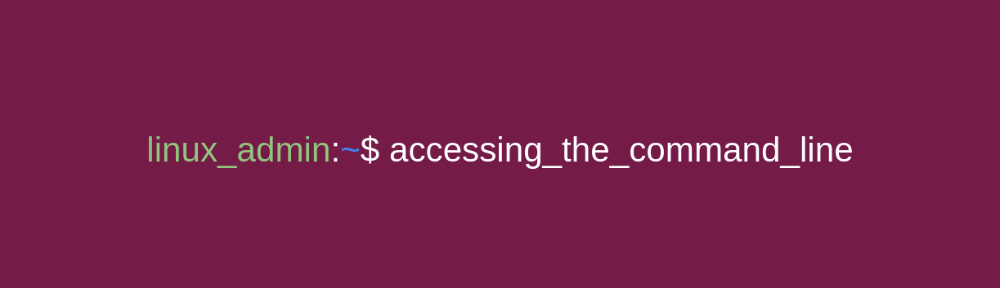
Let's dive deeper into the first chapter, "Accessing the Command Line." This chapter serves as an introduction to the command-line interface in Linux, an essential skill for any Linux administrator. I'll provide you with a tutorial-style breakdown of the key topics covered in this chapter.
Section 1: Accessing the Command Line Using the Local Console
Info
|Info|Details| |-|-| |Motivation| Understanding how to access the command line from the local console is crucial. It provides you with a direct way to interact with your Linux system, which is essential for both system administrators and power users. |Objective| To introduce you to accessing the command line from the local console. |Workspace|Press Ctrl + Alt + F3 or Ctrl + Alt + F4 (or other function keys) to access a virtual terminal.</br>You'll be presented with a text-based login prompt, where you can enter your username and password to access the command line.</br>At the command prompt, you can execute various Linux commands.
Command: Ctrl + Alt + F3
- Pressing Ctrl + Alt + F3 switches to the third virtual terminal, where you can log in and access the command line interface.
- You can switch back to the graphical interface with Ctrl + Alt + F2.
Tips
- Keep in mind that the command line is a powerful tool. Always double-check your commands before hitting Enter to prevent unintended consequences.
- It's essential to keep your username and password secure as this method of access provides full control of the system.
- Use strong, unique passwords for security.
- Remember to log out properly when done to free up system resources.
Section 2: Accessing the Command Line Using the Desktop
Info
|Info|Details| |-|-| |Motivation| Accessing the command line from the desktop environment is valuable when working on Linux systems with a graphical user interface (GUI). It allows you to switch between graphical and command-line tasks seamlessly. |Objective| To teach you how to access the command line from the desktop environment (GNOME). |Workspace|Open a terminal emulator from the GNOME desktop, you can typically find it in the applications menu or by using a keyboard shortcut, often Ctrl + Alt + T.
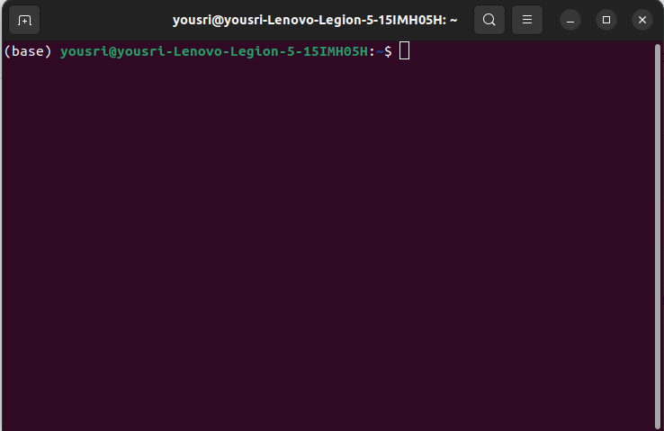
Command: Ctrl + Alt + T
- The terminal emulator provides a graphical interface for the command line.
- You can run commands in the terminal just like you would in the local console.
Tips
- Terminal emulators are highly customizable. You can change fonts, colors, and keyboard shortcuts to suit your preferences.
- Familiarize yourself with keyboard shortcuts to launch the terminal quickly.
- Learning to navigate the GUI using the command line can enhance your efficiency.
Section 3: Executing Commands Using the Bash Shell
Info
|Info|Details| |-|-| |Motivation| The Bash shell is the workhorse of the command line. It provides a powerful environment for executing commands, scripting, and automation. Understanding how to use it is essential for effective Linux administration. |Objective| To introduce you to the Bash shell and executing basic commands. |Workspace|Learn to run simple commands like ls (list files) and pwd (print working directory) to navigate and inspect the file system.</br>Understand command structure and options.
Commands: ls, pwd
| Command | Description | Usage |
|---|---|---|
| ls | List files and directories in the current directory. | ls [options] [directory] |
| ls -l | List files and directories in long format. | ls -l [directory] |
| pwd | Print the current working directory. | pwd |
The Bash shell is your command-line interface. You'll use it to execute commands and manage the system.
Example commands include ls (list files) and pwd (print working directory). These commands help you navigate and inspect the file system.
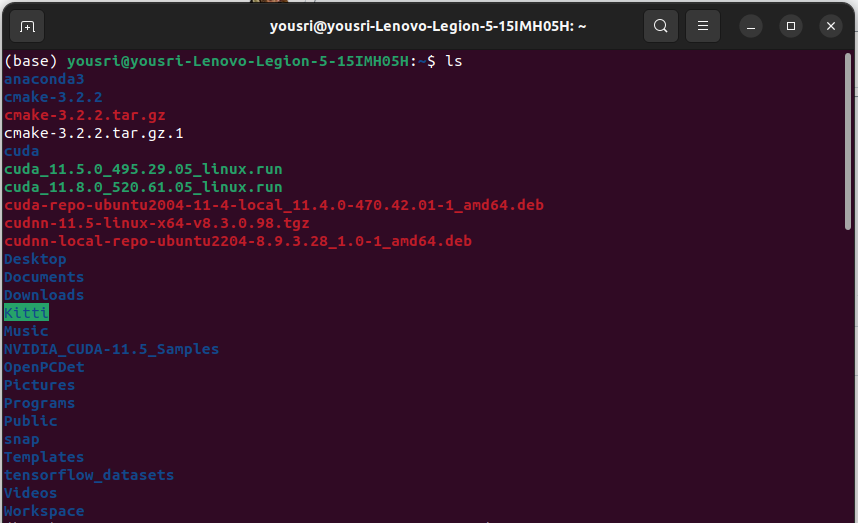
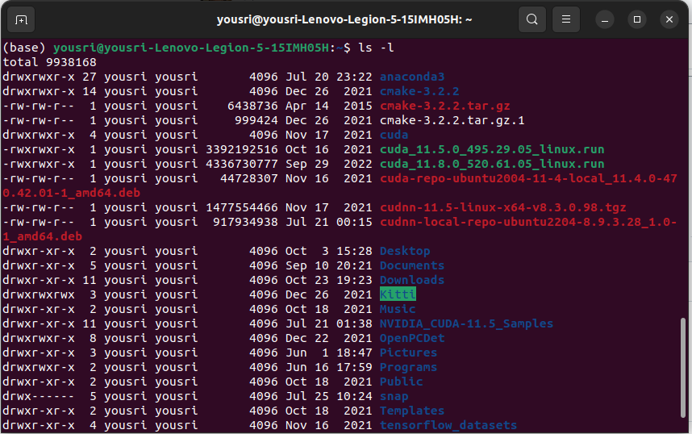
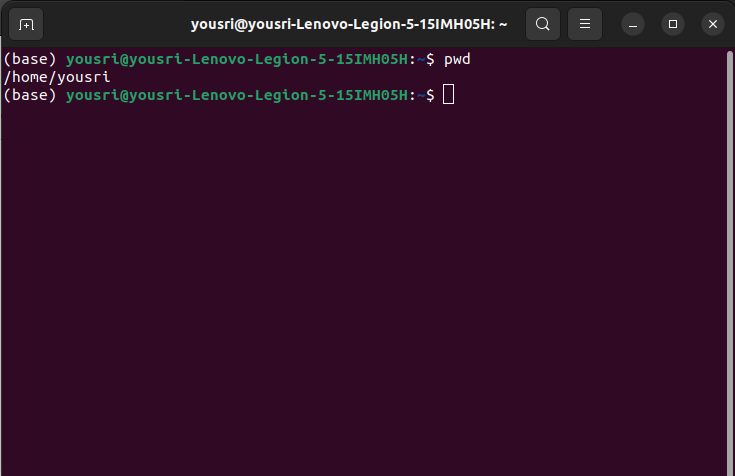
Tips
- Create aliases for frequently used commands to save time and reduce typing errors. For example, alias ll='ls -l' makes ll equivalent to ls -l.
- Mastering basic Bash commands is crucial; these skills form the foundation of your Linux administration knowledge.
- Use descriptive and meaningful file and directory names to make your work more manageable.
Section 4: Lab: Accessing the Command Line
Info
|Info|Details| |-|-| |Motivation| Hands-on labs are essential for reinforcing your learning and building confidence in your command-line skills. |Objective| A practical exercise to solidify your understanding of accessing the command line. |Workspace|Exercise accessing the command line both from the local console and within the GNOME desktop environment.</br>Practice running basic commands and navigating the file system to become comfortable with the command-line interface. |Clean Code Advice| In your commands and scripts, use meaningful and self-explanatory variable and file names. Writing clear and concise code makes it easier to understand and maintain. |Pro Programmer's Tips|Document your commands and their results for reference.</br>Use version control tools to track changes in your scripts and configurations.
Tips
- Practice Regularly: The more you practice, the more proficient you become. Make the command line your playground and test various commands.
- Embrace Mistakes: Don't be afraid to make mistakes on the command line. It's a great way to learn. If you make an error, you can often recover or start over.
- Seek Additional Resources: Complement your learning with books, online tutorials, and Linux forums. Learning from a variety of sources can provide different perspectives and insights.
- Keep a Cheat Sheet: Many Linux administrators maintain a list of common commands and shortcuts for quick reference. This can save you time and effort in your daily tasks.
Frequently Asked Questions (FAQ)
What is the command line, and why is it important in a Linux environment?
- Answer: The command line is a text-based interface to interact with a computer's operating system. It's important in Linux for tasks like system administration, automation, and efficient file management.
Explain the difference between the local console and the desktop environment when accessing the command line.
- Answer: The local console is a text-based interface directly on the system, while the desktop environment is a graphical user interface. The console is useful for system recovery and maintenance, whereas the desktop environment provides a user-friendly interface.
What is the purpose of the Bash shell, and how does it differ from other shells?
- Answer: Bash is a command-line shell used for executing commands and scripts. It's the default shell in most Linux distributions. Differences between shells include syntax and features.
How do you navigate through directories using the command line, and what are some common commands for file management?
- Answer: Use commands like cd to change directories and ls to list files. File management commands include cp, mv, and rm.
Chapter 2: Managing Files From the Command Line
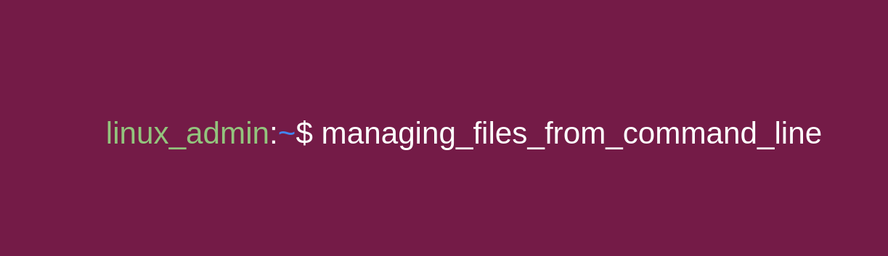
In this chapter, you'll embark on a journey through the intricacies of managing files from the Linux command line. Effective file management is a fundamental skill for Linux administrators and users alike. Understanding the structure of the Linux file system, how to locate files, and mastering key file management commands are essential. From organizing your own projects to finding important data efficiently, these skills will serve you well in your Linux journey.
Section 1: The Linux File System Hierarchy
Info
|Info|Details| |-|-| Motivation| Understanding the Linux file system hierarchy is fundamental to effective file and system management. It provides the structure for where data and system files are located. Objective| Gain a deep understanding of the Linux file system hierarchy. Workspace|Open a terminal emulator to access the command line, as you learned in the previous chapter.
The Linux File System Hierarchy
The Linux File System is organized logically into a hierarchical structure, which aims to ensure user-friendly and secure usage of the system. The organization provides both system-level protection and individual user privacy. Each direcotry serving a specific purpose.
- The Linux file system hierarchy is a structured layout of directories and files, starting with the root directory /.
- Key directories include /bin (system binaries), /home (user home directories), and /etc (system configuration files).
 Common directories in the Linux file system hierarchy include:
Common directories in the Linux file system hierarchy include:
| Directory | Details |
|---|---|
| / (Root Directory) | The root of the file system. Everything on a Linux system, including all files and directories, stems from this directory.</br> 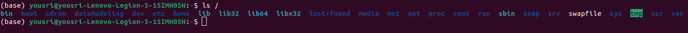 |
| /bin (Binary Programs) | Essential binary files required for booting and repairing the system. It contains fundamental commands, such as ls (list files), cp (copy), and mv (move).</br> 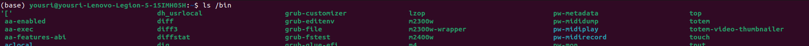 |
| /boot (Boot Files) | Contains boot loader and kernel files necessary for system startup.</br> 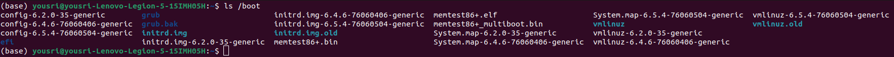 |
| /dev (Device Files) | Contains special files representing devices connected to the system, such as hard drives, partitions, and peripheral devices.</br>Within the /dev directory, you can find various devices, including disks and disk drives, which are known as block devices in Linux. The hard disks (mass storage devices) connected to the system are represented by device files such as /dev/sda (1,2,3, etc.), while USB devices are denoted by device files like /dev/usb (1,2,3, etc.).</br> |
| /etc (System Configuration Files) | Houses system-wide configuration files and scripts. Important system configuration files, including network settings and software configurations, are stored here. These configuration files control various aspects of the Linux system, including network configuration, authentication, services, and hardware settings.</br> 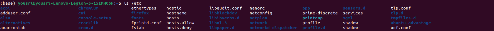 </br>Important files housed in the /etc direcotry:</br>   passwd: contains user account information.</br>   hosts: responsible for Domain Name System (DNS) resolution.</br>   fstab: contains file system mount information.</br>   Sudoers: contains the information for sudo users. |
| /home (User Home Directories) | Contains user home directories. Each user has a subdirectory in /home where they can store personal files and configuration settings.</br> 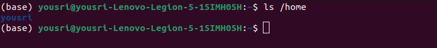 |
| /lib (Libraries) | Essential shared libraries, including the C programming code library, and kernel modules used by various programs. These files are essential in booting the file system and executing commands within the root file system.</br>Shared libraries are identified by their file extension *.so. The Windows equivalent would be a Dynamic Link Library (.DLL). These libraries are vital for the normal functioning of the system.</br> 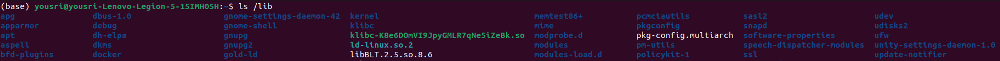 |
| /media (Removable Media) | Used for mounting removable media devices like USB drives and optical discs. When a removable device is attached, it is typically mounted in a subdirectory here.</br> 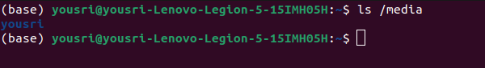 |
| /mnt (Mount Points) | A directory often used for mounting temporary file systems or network shares. System administrators can choose to mount various resources in subdirectories under /mnt. |
| /opt (Optional Software) | A location for optional or add-on software packages, often from third-party sources.</br> 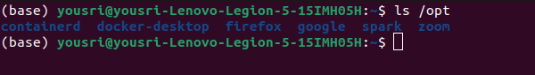 |
| /proc (Kernel and Process Information) | A pseudo-file system that provides information about running processes and kernel parameters. It is used for interacting with and monitoring system processes. |
| /root (Root User's Home) | The home directory of the root user, typically used for system administration tasks.</br> 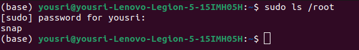 |
| /sbin (System Binaries) | Contains essential system administration binaries. These binaries are required for system maintenance and recovery. |
| /srv (Service Data) | This directory is used for data related to services provided by the system, such as web server content. |
| /tmp (Temporary Files) | A directory for storing temporary files created by various applications and users. The contents of /tmp are typically volatile and often deleted on system reboot.</br>By using the /tmp directory, programs can share temporary data without encumbering other directories, thus promoting system stability.</br> 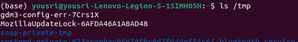 |
| /usr (User Binaries and Libraries) | Contains user binaries, libraries, and data files. This directory can be shared among multiple systems over a network. The contents within the /usr directory are usually read-only. </br> 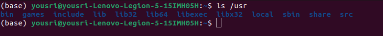 </br>Important Direcotries found in the /usr directory include the following:</br>   ~ /usr/bin: non-essential binary files for user programs (if you can’t find a user binary under /bin, look in /usr/bin)</br>   ~ /usr/sbin: non-essential binaries intended for use by the system administrator (if you can’t find a system binary under /sbin, look in /usr/sbin).</br>   ~ /usr/lib: shared libraries used by /usr/bin and /usr/sbin</br>   ~ /usr/include: C++ header files for C++ development</br>   ~ /usr/local: user programs that you install from source (e.g., when you install Apache from source, it goes under /usr/local/apache2)</br>   ~ /usr/src: Linux kernel sources, header-files, and documentation</br>   ~ /usr/share: architecture-dependent data that is shared by applications |
| /var (Variable Data) | Used for variable data files that change during the operation of the system, such as log files, mail spools, and other frequently changing data. It also includes system and application logs.</br>Other subdirectories within the /var directory include /var/spool for storing data that is awaiting processing by programs or users, such as print jobs queues and mail queues; /var/tmp for holding temporary files that are typically not preserved during system reboots; and /var/cache, which contains cached data from applications.</br> 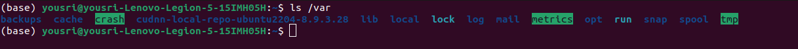 |
Tips
- Use descriptive and well-organized directory structures for your own projects.
- When navigating the file system, use tab completion to save time and reduce the risk of typos.
Section 2: Locating Files by Name
Info
|Info|Details| |-|-| |Motivation| The ability to locate files by name is essential for efficient file management and data retrieval. This skill saves time and effort when dealing with a large number of files. Objective| Learn how to locate files by name. Workspace| Continue using the terminal emulator.
Command: find
|Command|Description| |-|-| |find|Used to locate files by its name|
The find command is a powerful tool for locating files by name. For example, find / -name myfile.txt searches for a file named myfile.txt starting from the root directory /.
You can refine your search by specifying directories, file types, and more.
find /path/to/search -name 'filename'In this Command:
- '/path/to/search/': Replace this with the directory where you want to start your search. The command will search for the specified file name and its variations starting from directory and its subdirectories.
- '"filename"': Replace this with the name of file you're looking for. You can use wildcards to search for files with a specific pattern. For example; if you want to find all files with a '.txt' extention, you can use '**".txt"*'.
Here is an example to find all text files (files with a '.txt' extention) in the users's home directory
find /home/user -name "*.txt"This command will search the /home/user directory and its subdirectories for files with names ending in .txt.
Keep in mind that the find command is very flexible and can be used to search for files using various criteria, not just by name. It's a versatile tool for locating and working with files in a Linux or Unix system.
Tips
- Use regular expressions to create more flexible and complex file search patterns.
- Be cautious when searching from the root directory (/), as it may take some time to complete.
Section 3: Managing Files Using Command-Line Tools
Info
|Info|Details| |-|-| Motivation| Learning to manage files using command-line tools is vital for Linux administrators. These tools provide efficient ways to handle files and directories. Objective| Understand how to manage files using command-line tools. Workspace| Stay within the terminal emulator.
Commands: cp, mv, rm
| Command | Description |
|---|---|
| cp | Copies files or directories from one location to another.</br>It creates a duplicate of the source file or directory in the destination. |
| mv | Moves or renames files or directories from one location to another.</br>It changes the location or name of the source file or directory. |
| rm | Removes (deletes) files or directories.</br>Be cautious, as deleted files are typically not recoverable. |
Commands like cp (copy), mv (move), and rm (remove) are used for common file management tasks.
For example, cp file1.txt /path/to/destination copies a file, mv file1.txt newname.txt renames a file, and rm file1.txt deletes a file.
Bash Codes Examples
# Copy a file from the current directory to another directory
cp file.txt /path/to/destination/
# Copy a directory and its contents to another directory (use -r for recursive)
cp -r source_directory/ /path/to/destination/
# Move a file to another directory
mv file.txt /path/to/destination/
# Rename a file (move it to the same directory with a different name)
mv oldname.txt newname.txt
# Move a directory and its contents to another directory
mv source_directory/ /path/to/destination/
# Remove a file
rm file.txt
# Remove a file forcefully without asking for confirmation
rm -f file.txt
# Remove a directory and its contents (use -r for recursive)
rm -r directory/Tips
- Please exercise caution when using the rm command, especially with the -r (recursive) option, as it can permanently delete files and directories. Double-check the paths and consider using -i (interactive) option to confirm each file deletion.
- Use the -r option with cp and mv to work with directories and their contents.
- Be cautious with the rm command, as deleted files are not typically recoverable.
Section 4: Matching File Names Using Path Name Expansion
Info
|Info|Details| |-|-| Motivation| Path name expansion is a handy feature for quickly working with files based on their names. It simplifies file operations and saves time. Objective| Explore path name expansion to match file names efficiently. Workspace| Continue using the terminal emulator.
Wildcards
In the Bash shell, there are several wildcards, also known as glob patterns, that you can use to match files and directories based on patterns. Here are the most commonly used wildcards:
| Wildcard | Description |
|---|---|
| * (Asterisk) | Matches any sequence of characters. For example, *.txt matches all files with a .txt extension. |
| ? (Question Mark) | Matches any single character. For example, file?.txt matches files like file1.txt and fileA.txt. |
| [ ] (Square Brackets) | Matches a single character from a specified range or set. For example, [0-9] matches any single digit. |
| [! ] (Exclamation Mark within Square Brackets) | Matches any single character that is not in the specified range or set. For example, [!aeiou] matches any character that is not a vowel. |
| { } (Braces) | Allows you to specify multiple patterns or options. For example, {file1,file2}.txt matches either file1.txt or file2.txt. |
| ** (Double Asterisk) | Used for recursive globbing. It matches directories and their contents recursively. For example, **/*.txt matches all .txt files in subdirectories. |
These wildcards provide powerful pattern-matching capabilities when working with files and directories in the command line. You can use them with various commands, such as ls, cp, mv, and rm, to perform operations on files that match specific patterns.
Command Explanation:
- Path name expansion is also known as "wildcards." Common wildcards include * (matches any characters) and ? (matches a single character).
- For example, cp *.txt /path/to/destination copies all files with the .txt extension to the destination directory.
Bash Code Examples using Wildcards
1- Matching All Files in the Current Directory:
- To list all files in the current directory, you can use the * wildcard character, which matches any sequence of characters.
ls *2- Matching Files with a Specific Extension:
- If you want to list all files with a specific file extension (e.g., .txt), you can use the * wildcard with the extension.
ls *.txt3- Matching Files with Variable Names:
- You can use the ? wildcard character to match a single character. For example, to list files with names like file1.txt and file2.txt, you can use:
ls file?.txt4- Matching Files with Variable Characters:
- To match files with variable characters, you can use character classes in square brackets. For example, to list files with names like fileA.txt and fileB.txt, you can use:
ls file[A-B].txt5- Combining Wildcards:
- You can also combine multiple wildcards to create more complex patterns. For example, to list all files with a single-digit number in the name and a .txt extension, you can use:
ls *[0-9].txtTips
- Be careful when using wildcards to avoid unintended operations.
- Use the ls command with wildcards to preview which files will be affected by a command.
Frequently Asked Questions (FAQ)
Q: What is the default directory structure of the Linux File System?
- The default structure of the Linux File System is a hierarchical structure that begins with the root directory. All other directories stem from the root directory.
Q: What is an inode and how is it used in the Linux File System?
- An inode is an index node. It serves as a unique identifier for a specific piece of metadata on a given filesystem. Each piece of metadata describes what we think of as a file.
Q: How do I manage disk space in the Linux File System?
- You can manage disk space using the Graphical User Interface (GUI). Disk space management can be done using a file manager, but you can also use the du (disk usage), and df (disk free) commands in the terminal.
Q: How is data organized in the Linux File System?
- Linux uses devices to receive, send, and store data. Typically, devices correspond to physical hardware components like hard disks, USB sticks, or input/output devices such as a keyboard. However, some devices may not have a hardware component, and in such cases, the kernel provides pseudodevices that you can access as if they were physical devices.
- When formatting a partition on a disk, the operating system writes the filesystem, as we have previously discussed, so that you can efficiently organize data within the logical filesystem hierarchy provided by Linux.
Q: What is the difference between the root directory and the home directory in Linux?
- The root directory is the top most level of the Linux File System, and everything, including the home directory, falls under the root directory. The home directory contains the data for a particular user. Every user registered on the system will have their own named directory under the home directory.
Q: How do you create and delete files and directories in the Linux File System?
- The creation and deletion of files and folders are possible through both the GUI and the command-line terminal. The GUI provides an intuitive approach where you can simply right-click anywhere and create a new folder.
- Alternatively, in the terminal, you can use the mkdir command to create a new directory. Similarly, to create a new file, you can use the touch command.
Q: How do you locate files by name using the find command, and provide an example?
- Answer: The find command searches for files by name in a specified directory. For example, to find all .txt files in the /home/user directory, you can use find /home/user -name "*.txt".
Q: What is path name expansion, and how can you use wildcards to match file names?
- Answer: Path name expansion allows you to use wildcards like , ?, [ ], and { } to match file names based on patterns. For example, .txt matches all files with a .txt extension.
Q: Explain the purpose of file permissions in Linux and provide an example of changing file permissions.
- Answer: File permissions control who can access and modify files. You can change file permissions using the chmod command. For example, chmod 644 file.txt sets read and write permissions for the owner and read-only permissions for others.
Chapter 3: Getting Help in Red Hat Enterprise Linux
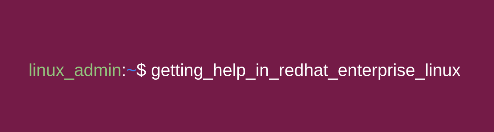
Abstarct Introduction
In Chapter 3, we explore the essential skill of seeking help and documentation in Red Hat Enterprise Linux. As a system administrator, it's crucial to know how to access and utilize various resources to find solutions, troubleshoot problems, and learn about the system.
Section 1: Reading Documentation Using man Command
Info
|Info|Details| |-|-| Motivation| Accessing the built-in manual pages is fundamental for understanding command usage and options. Objective| Learn how to use the man command to access command documentation. Explanation|The man command is a vital tool for accessing manual pages in Linux. These pages provide detailed information about command usage, options, and functionality.
Command: man
|Command| Description| |-|-| |man| Displays the manual page for a specified command.
To use man, simply type man followed by the command you want to learn about:
man lsThis command displays the manual page for the ls command. You can navigate through the manual using arrow keys, and press 'q' to exit.
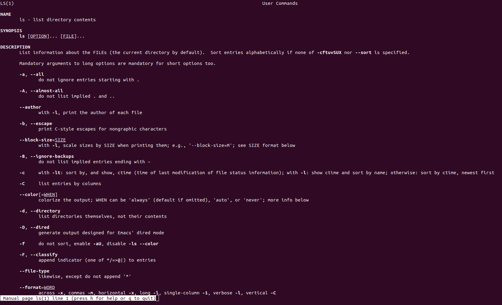
Tips
- Use the man command to quickly access command documentation.
- Manual pages are organized into sections, so you may need to specify the section number (e.g., man 5 passwd for file format descriptions).
Section 2: Reading Documentation Using info Command
Info
|Info|Details| |-|-| Motivation| Learn about an alternative documentation system, "info," which provides more extensive documentation for certain commands. Objective| Learn how to use the info command to access detailed documentation. Explanation|The info command provides a more extensive documentation system compared to man. It's often used for commands and concepts that require in-depth explanations.
Command: info
|Command| Description| |-|-| |info| Displays detailed documentation for a specified command or concept.|
To access info pages, use:
info commandFor example:
info tar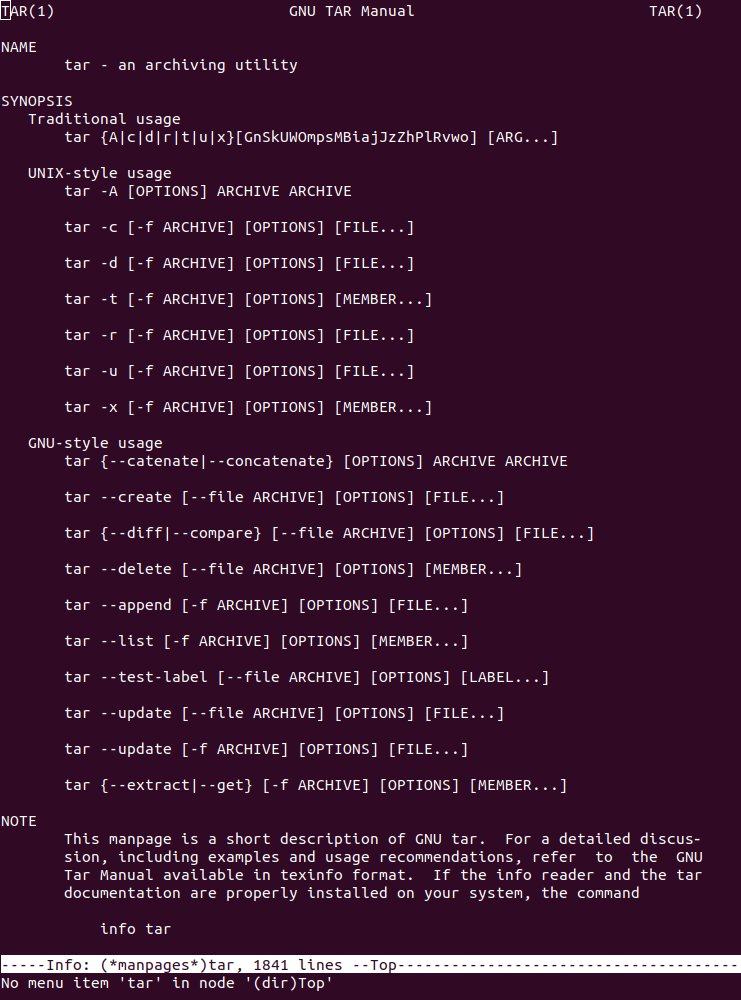
Tips
- info pages are structured, and you navigate them using arrow keys and commands like 'n' (next) and 'p' (previous).
- Some commands may have both man and info pages, allowing you to choose the depth of information you need.
Section 3: Reading Documentation in /usr/share/doc
Info
|Info|Details| |-|-| |Motivation| Discover additional documentation stored in the /usr/share/doc directory. |Objective| Learn how to find and read package-specific documentation. |Explanation|Many Linux packages come with additional documentation stored in the /usr/share/doc directory. This documentation includes README files, changelogs, and usage guides.
Commands: cd, ls, less
|Command| Description| |-|-| |cd| Change directory to access package documentation. |ls| List available documentation packages. |less| View the content of specific documentation files.
To access this documentation, you can navigate to the directory and view the files.
cd /usr/share/doc
ls
less package_name/READMEExample of reading gcc/README.Debian documentation:
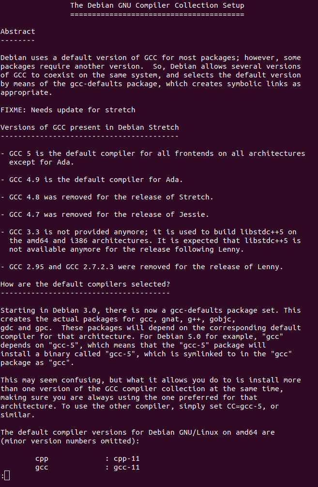
Tips
- /usr/share/doc contains valuable information about installed packages, configurations, and usage.
- Documentation files are often in plain text format, making them easy to read.
Section 4: Getting Help From Red Hat
Info
| Info | Details |
|---|---|
| Motivation | Learn how to access support and resources from Red Hat for assistance with Red Hat Enterprise Linux. |
| Objective | Discover how to obtain support from Red Hat and create an SOS report. |
| Explanation | Red Hat offers various resources for support and assistance. You can access Red Hat's customer support portal for documentation, knowledge base articles, and support tickets. Additionally, you can create an SOS report to provide system information for troubleshooting. |
Command: sosreport
| Command | Description |
|---|---|
| sosreport | Generate an SOS report for troubleshooting. |
To create an SOS report, use:
sosreportThis generates a compressed tarball containing system information that can be shared with Red Hat support.
Tips
- Red Hat provides extensive support, including documentation, knowledge base articles, and customer support.
- Creating an SOS report can be crucial for resolving complex system issues.
Summarize How to search for Command Information
Searching for information about a command in Linux is a common task, especially when you need to understand its usage, options, and examples. Here's how you can search for information about a command:
1- Man Pages (Manual Pages):
- The primary source of information for most Linux commands is the manual pages, or man pages. You can access the man page for a command by typing man followed by the command's name. For example:
`bash man ls`
- This will display a detailed manual page with information about the command's usage, options, and often examples.
2- Info Pages:
- Some commands have info pages in addition to man pages. You can access info pages by typing info followed by the command's name. For example:
`bash info cp` - Info pages often provide more detailed and structured information compared to man pages.
3- Online Documentation:
- Many Linux distributions provide online documentation that includes command references and guides. You can often access these resources via a web browser or by searching for "Linux command name documentation" in your favorite search engine.
4- Command Help:
- Many commands have built-in help options that you can access by using the --help or -h switch. For example:
`bash ls --help` - This will provide a brief overview of the command's options.
5- Online Forums and Communities:
- If you're facing a specific issue or have questions about a command, you can search online forums and communities like Stack Exchange, Linux forums, and Reddit's Linux-related subreddits. Many experienced Linux users are willing to help.
6- Books and Documentation:
- Linux books, guides, and documentation often include detailed explanations of various commands and their usage. You can consult these resources for in-depth information.
Frequently Asked Questions (FAQ)
Interview questions may focus on a candidate's knowledge of accessing and utilizing various resources for seeking help and documentation. Here are some common interview questions related to this chapter:
Q: What is the purpose of the man command in Linux, and how do you use it to access command documentation?
- Answer: The man command is used to access manual pages that provide detailed information about command usage, options, and functionality. To use it, you type man followed by the command you want to learn about. For example, man ls displays the manual page for the ls command.
Q: What is the difference between man and info documentation in Linux, and when would you use one over the other?
- Answer: man and info are both documentation systems. man provides concise command documentation, while info offers more extensive documentation, often used for in-depth explanations. The choice depends on the depth of information required for a particular command.
Q: Explain how to access package-specific documentation stored in the /usr/share/doc directory.
- Answer: Package-specific documentation is often stored in the /usr/share/doc directory. To access it, navigate to the directory and list available documentation packages with 'ls'. You can then use commands like 'less' to view specific documentation files.
Q: What resources does Red Hat provide for obtaining support and assistance with Red Hat Enterprise Linux?
- Answer: Red Hat offers various resources, including the customer support portal for documentation, knowledge base articles, and support tickets. You can also create an SOS report to provide system information for troubleshooting.
Q: What is the purpose of an SOS report, and how do you generate one in Red Hat Enterprise Linux?
- Answer: An SOS report is used to gather system information for troubleshooting complex issues. To generate an SOS report, you can use the sosreport command. It creates a compressed tarball containing system information that can be shared with Red Hat support.
Chapter 4: Creating, Viewing, and Editing Text Files
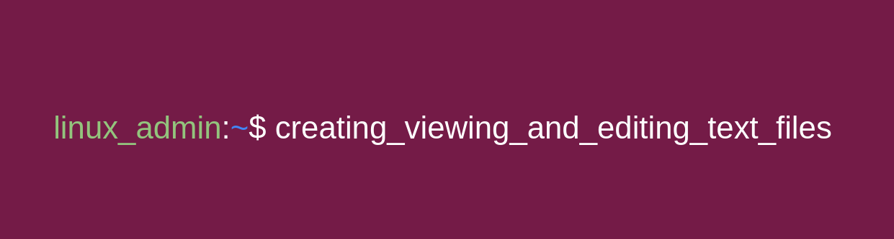
Abstract Introduction:
Chapter 4 delves into working with text files in Red Hat Enterprise Linux. Text files are fundamental components for configuration, scripting, and system management. This chapter covers creating, viewing, and editing text files using command-line and graphical tools.
Section 1: Redirecting Output to a File or Program
Info
|Info|Details| |-|-| Motivation| Understand how to capture and redirect command output to a file. Objective| Learn how to use redirection to save command output to a file or send it to another program. Explanation|Redirecting output allows you to save the results of a command or send them to another program or file. The > and >> operators are used for this purpose. Use > to create a new file or overwrite an existing one, and >> to append to an existing file.
Commands: >, >>
|Command| Description| |-|-| |>| Redirect output to a file (overwrite if it exists). |>>| Append output to an existing file.
# Redirect the output of a command to a file (overwrite if it exists)
command > output.txt
# Append the output of a command to an existing file
command >> output.txtTips
- Use > to create a new file or replace the content of an existing file.
- Use >> to add output to an existing file without overwriting it.
Section 2: Editing Text Files from the Shell Prompt
Info
|Info|Details| |-|-| Motivation| Learn how to create and edit text files directly from the command line. Objective| Understand the basics of text editing with command-line tools. Explanation|Linux provides text editors like vi and nano for creating and editing text files from the command line. For example, to create a new file or edit an existing one:
Commands: vi, nano
|Command| Description| |-|-| vi (vim)| Opens the Vim text editor for file editing.</br>Vim is a powerful, modal text editor with modes for navigating, inserting, and command execution. nano| Opens the nano text editor for file editing.</br>Nano is a straightforward and user-friendly text editor that provides basic editing capabilities.
To create or edit a file with Vim or nano:
vi filename.txt
nano filename.txtTips:
- vi and nano are popular text editors in Linux.
- Use i in vi to enter insert mode for editing, and press Esc to exit insert mode.
Section 3: Editing Text Files with a Graphical Editor
Info
|Info|Details| |-|-| Motivation| Explore the use of graphical text editors for editing text files. Objective| Learn how to use graphical editors to work with text files. Explanation|In a graphical environment, tools like Gedit or Mousepad provide a user-friendly way to edit text files. To open a file using Gedit:
Command: getit, mousepad
|Command| Description| |-|-| |gedit| Opens the Gedit graphical text editor for file editing. |mousepad| Opens the Mousepad graphical text editor for file editing.
gedit filename.txtTips
- Graphical editors provide a more user-friendly interface for text editing.
- Use keyboard shortcuts and menu options for common editing tasks.
Frequently Asked Questions (FAQ)
Interview questions may focus on a candidate's ability to work with text files and text editors in Linux. Here are some common interview questions related to this chapter:
Q: Explain the purpose of text files in Linux and why they are essential for system administration.
- Answer: Text files are fundamental for storing configuration data, scripts, and system-related information. They are essential for system administration because they allow for easy configuration management and automation.
Q: Describe the differences between command-line text editors like vi and nano and graphical text editors like Gedit. When would you use one over the other?
- Answer: Command-line text editors are typically used in terminal environments, while graphical editors provide a user-friendly interface. vi and nano are often used in terminal sessions for quick edits, while graphical editors are preferred for more extensive editing tasks.
Q:How can you create a new text file using the command line, and what command would you use to open and edit it with vi?
- Answer: You can create a new text file with touch and edit it with vi using the command vi filename.txt. To open and edit an existing file with vi, you'd use vi existing_file.txt.
Q: Explain the modes in the vi (Vim) text editor and how you switch between them.
- Answer: Vim has three primary modes: Normal, Insert, and Visual. You switch between modes by pressing 'Esc' to go from Insert to Normal mode and 'i' to enter Insert mode. In Normal mode, you can execute commands.
Q: What are the advantages of using vim over other text editors, and how would you save and exit a file in Vim?
- Answer: Vim is highly configurable, provides powerful text manipulation features, and has a strong community. To save and exit a file in Vim, press 'Esc' to enter Normal mode and then type :wq and press 'Enter'.
Chapter 5: Managing Local Linux Users and Groups
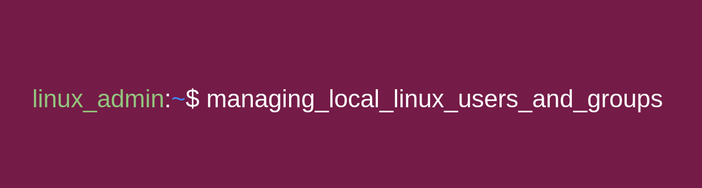
Abstract Introduction
Chapter 5 explores the fundamental concepts of user and group management in Red Hat Enterprise Linux. Proper user and group management is essential for system security and access control. This chapter covers creating, managing, and configuring user accounts and groups.
Section 1: Users and Groups
Info
|Info|Details| |-|-| Motivation| Understand the role of users and groups in Linux and why they are essential for system administration. Objective| Learn the concepts of user and group management in Linux. Explanation|In Linux, users and groups play a vital role in system security and access control.</br>Users are individual accounts, while groups are collections of users with similar privileges.</br>Users and groups are essential for controlling file access, permissions, and resource allocation.
|Term| Description| |-|-| |Users| Individual accounts that can log in to the system. |Groups| Collections of users with similar privileges.
Tips
- Effective user and group management is crucial for ensuring system security and access control.
- Regularly review and audit user accounts and group memberships to maintain system security.
Section 2: Gaining Superuser Access
Info
|Info|Details| |-|-| Motivation| Understand the concept of superuser access and how it differs from regular user privileges. Objective| Learn how to gain superuser access to perform administrative tasks. Explanation|The superuser, often referred to as "root," has elevated privileges and can perform administrative tasks that regular users cannot. To gain superuser access, you can use the su (substitute user) command or log in directly as the root user.
Command: su
|Command |Description| |-|-| |su| Substitute user command for gaining superuser access.
su -- This command allows you to switch to the root user, provided you know the root password.
Tips
- Exercise caution when using superuser privileges, as they allow unrestricted access to the system.
- Logging in as the root user should be done sparingly and with care.
Section 3: Managing Local User Accounts
Info
|Info|Details| |-|-| Motivation| Understand how to create and manage user accounts for system users. Objective| Learn how to create, modify, and delete user accounts using command-line tools. Explanation|You can create, modify, and delete user accounts in Linux using commands like useradd, usermod, and userdel. For example, to create a new user:
Commands: useradd, usermod, userdel, passwd
| Command | Description |
|---|---|
| useradd | Create a new user account. |
| usermod | Modify user account properties. |
| userdel | Delete a user account. |
| passwd | Set or change a user's password. |
# To create new user:
useradd username
# To set a password for the user:
passwd usernameTips
- Properly configure user account properties, including home directories, default shells, and group memberships.
- Regularly audit and manage user accounts to ensure system security.
Steps to add User to a Group?
To add a user to a group in Linux, you can use the usermod command. The usermod command allows you to modify the properties of a user account, including the groups that the user belongs to.
To add a user to a group using the usermod command, you must specify the following:
- The name of the user to add to the group
- The name of the group to add the user to
For example, to add the user bard to the group developers, you would run the following command:
usermod -a -G developers bard- The -G option tells the usermod command to modify the user's group memberships. The developers argument is the name of the group to add the user to.
- The -a option in the usermod command tells the command to append the group to the list of groups that the user belongs to. This means that the user will be added to the group, but they will not be removed from any other groups that they belong to.
You can also use the groupadd command to add a user to a group. The groupadd command allows you to create and modify groups.
To add a user to a group using the groupadd command, you must specify the following:
- The name of the group to create or modify
- The name of the user to add to the group
For example, to add the user bard to the group developers, you would run the following command:
groupadd -f -m developersThe -f option tells the groupadd command to force the creation of the group, even if it already exists. The -m option tells the groupadd command to create a home directory for the group.
Once you have added the user to the group, you can check to make sure that the user has been added to the group by running the following command:
groups bardThis command will print a list of the groups that the user bard belongs to.
Frequently Asked Questions (FAQ)
Interview questions may assess a candidate's knowledge of user and group management in Linux, a critical skill for system administration. Here are some common interview questions related to this chapter:
Q: Explain the purpose of user accounts and groups in Linux. Why is it essential to manage them effectively?
- Answer: User accounts provide individual access to the system, while groups allow for the management of user privileges. Effective management is essential for security, access control, and resource allocation.
Q: What is the difference between a user and a group in Linux, and how do they work together for access control?
- Answer: Users are individual accounts, while groups are collections of users. Groups are used to grant permissions to multiple users simultaneously, simplifying access control.
Q: How can you create a new user account in Linux, and what command would you use for this?
- Answer: To create a new user account, you can use the useradd command. For example, sudo useradd newuser creates a new user account named "newuser."
Q: Explain the concept of superuser access in Linux. How do you gain superuser access, and what precautions should be taken when using it?
- Answer: The superuser, often referred to as "root," has elevated privileges. To gain superuser access, you can use the su command. Precautions include using it sparingly, as it provides unrestricted access to the system.
Q: Describe how to set or change a user's password in Linux. What command is used, and what security considerations should be kept in mind when managing passwords?
- Answer: To set or change a user's password, you can use the passwd command. Security considerations include using strong passwords, ensuring regular password changes, and protecting password hashes.
Chapter 6: Controlling Access to Files with Linux File System Permissions
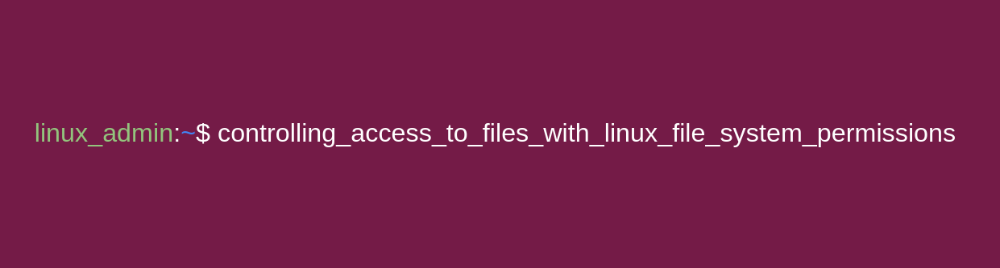
Abstract Introduction
Chapter 6 delves into the critical aspect of file system permissions in Red Hat Enterprise Linux. Properly configured file permissions are essential for securing data and resources. This chapter covers the concepts of Linux file permissions and how to control access to files and directories.
Section 1: Linux File System Permissions
Info
|Info|Details| |-|-| Motivation| Understand the significance of file system permissions in maintaining system security. Objective| Learn how Linux file system permissions work and their role in access control. Explanation|File system permissions in Linux determine who can access, modify, or execute files and directories. Permissions are assigned to three categories: owner, group, and others, and can be set as read (r), write (w), and execute (x).
Permissions
| Term | Description |
|---|---|
| Permissions | Access control settings for files and directories. |
Linux file system permissions are a fundamental aspect of access control and security in the operating system. They dictate who can read, write, and execute files and directories.
Permissions Breakdown: r, w, x
Here's a breakdown of the available permissions and what they mean:
|Permission|Description| |-|-| Read (r)|For files: If a user has read permission, they can view the contents of the file.</br>For directories: With read permission, a user can list the files and subdirectories within the directory. Write (w)|For files: Users with write permission can modify the contents of the file or delete it.</br>For directories: Write permission allows users to create, delete, and modify files and subdirectories within the directory. Execute (x)|For files: Execute permission allows users to run the file as a program or script.</br>For directories: Execute permission is necessary to enter the directory and access its contents.</br> Without execute permission, a user can't access files or subdirectories within it.
Permissions Assignation: u, g, o
Permissions are assigned to three categories:
|Assigned To|Details| |-|-| |Owner (u)| These permissions apply to the user who owns the file or directory. |Group (g)| These permissions apply to the group associated with the file or directory.</br> Files and directories can belong to a specific group, and all members of that group have these permissions. |Others (o)| These permissions apply to all users who are not the owner or in the group.
Speical Permission: SUID (s), SGID (g)
Additionally, there's a special permission called the "set user ID" (SUID) and "set group ID" (SGID). These permissions allow a user who runs the file to temporarily gain the privileges of the owner (SUID) or group (SGID) for the duration of the program's execution.
SUID (Set User ID):
SUID is often used to give users the ability to execute a program with the permissions of the program's owner, regardless of who runs it. It's frequently used for programs that need elevated privileges, like passwd which allows users to change their passwords.
Let's take an example of a program that can only be executed by the owner but needs SUID to run with elevated permissions:
# Create a simple C program (e.g., myprogram.c)
#include <stdio.h>
#include <unistd.h>
int main() {
uid_t uid = geteuid();
printf("Effective User ID: %d\n", uid);
return 0;
}
# Compile the program
gcc myprogram.c -o myprogram
# Set the SUID bit on the executable
# + sign indicates that you are adding a permission.
chmod +s myprogram
# Check the permissions
ls -l myprogramIn this case, when any user executes myprogram, it will run with the effective user ID of the program's owner, not the user who runs it. You'll see that the SUID permission is set in the file's permissions when you run ls -l.
SGID (Set Group ID):
SGID is often used for directories to ensure that files created within the directory inherit the group ownership of the directory rather than the user's default group.
Let's create an example where a directory has SGID set:
# Create a directory
mkdir sgid_example
# Set the SGID bit on the directory
chmod g+s sgid_example
# Check the permissions of the directory
ls -ld sgid_example
# Create a file within the directory
touch sgid_example/myfile
# Check the group ownership of the created file
ls -l sgid_example/myfileWith SGID set on the sgid_example directory, when a user creates a file within it, the file inherits the group ownership of the directory. This can be useful for collaborative projects where multiple users need access to shared files.
Notation
Symbolic Notation
Symbolic notation is a human-readable representation of file permissions using letters and symbols. It consists of three parts: the user, the group, and others, each represented by 'u,' 'g,' and 'o' respectively. The permissions themselves are represented by 'r' for read, 'w' for write, and 'x' for execute. Here's how it works:
| Notation | Description |
|---|---|
| u | stands for the user/owner |
| g | stands for the group |
| o | stands for others |
In symbolic notation, you can represent these permissions as a combination of letters (e.g., "rw-r--r--" for a file with read and write permissions for the owner and read-only permissions for the group and others).
In this notation:
- "rw-" represents read and write permissions for the owner (user).
- "r--" represents read-only permissions for the group.
- "r--" represents read-only permissions for others.
# Create a sample file
touch sample_file
# Set permissions using symbolic notation
chmod u=rw-,g=r--,o=r-- sample_file
# Check the permissions
ls -l sample_file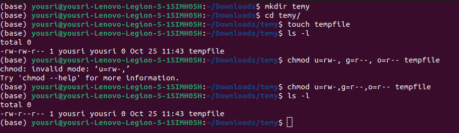
Illustration:
When you use ls -l to view the permissions of the "sample_file," you'll see the symbolic notation:
-rw-r--r--This means:
- The owner (user) has read and write permissions.
- The group has read-only permissions.
- Others have read-only permissions.
You can use the same symbolic notation with the chmod command to set or modify permissions as needed. For example:
- chmod u+w sample_file adds write permission for the owner.
- chmod g-x sample_file removes execute permission for the group.
- chmod o+rwx sample_file grants read, write, and execute permissions for others.
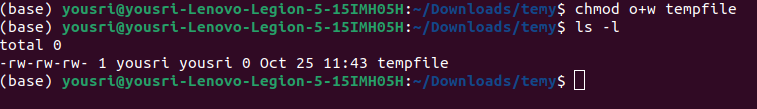
Numeric Notation
Numeric notation assigns values to each permission:
- read (4)
- write (2)
- execute (1)
The sum of these values determines the overall permission value.
For example, if a file has permissions "rw-r--r--," the numeric representation for the owner's permissions (4 + 2) would be 6, and the numeric representation for the group and others (4) would be 4.
# Create a sample file
touch sample_file
# Set permissions using numeric notation
chmod 644 sample_file
# Check the permissions
ls -l sample_file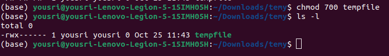
Why read = 4, write = 2, and excute = 1 ?
The values of 4 for read, 2 for write, and 1 for execute in numeric notation are historical conventions, and they are based on a system of binary representation of permissions. Let me explain:
In the binary numbering system, each digit is a power of 2, and the values are as follows:
- 2^0 = 1
- 2^1 = 2
- 2^2 = 4
- 2^3 = 8
These values are used because they correspond to different bits in a binary representation, making it easy to calculate and manipulate file permission values.
Here's how it works:
- Execute (x): This permission corresponds to the least significant bit (LSB) in a binary representation. Since it's the smallest power of 2, it's assigned the value 1.
- Write (w): Write permission corresponds to the next bit, which is 2^1 = 2. In binary, it's represented as "10."
- Read (r): Read permission corresponds to the next bit, which is 2^2 = 4. In binary, it's represented as "100."
Using these values, you can easily represent the different combinations of permissions in binary form. For example:
- "111" would mean read, write, and execute permissions (4 + 2 + 1).
- "101" would mean read and execute permissions (4 + 1), but not write.
Tips
- Regularly review and adjust file permissions to ensure that access is appropriately restricted.
- Use permissions to enforce the principle of least privilege, granting only the necessary access to users and groups.
Section 2: Managing File System Permissions from the Command Line
Info
|Info|Details| |-|-| Motivation| Learn how to manage file system permissions using command-line tools. Objective| Understand how to set and modify file permissions for files and directories. Explanation|Permissions can be set and modified using commands like chmod for changing permissions, chown for changing ownership, and chgrp for changing group ownership.
Commands: chmod, chown, chgrp
|Command| Description| |-|-| chmod| Change file permissions. chown| Change file ownership. chgrp| Change group ownership.
For example, to give read and write permissions to the owner of a file:
chmod u+rw filenameSame as explained in the above sections.
Tips
- Use symbolic or numeric notation with chmod to set permissions.
- Carefully consider the implications of changing file ownership and group ownership.
Section 3: Managing Default Permissions and File Access
Info
|Info|Details| |-|-| Motivation| Understand how to control default permissions for newly created files and directories. Objective| Learn how to manage default permissions and access for new files and directories. Explanation|Default permissions for new files and directories can be controlled using the umask command. The umask value subtracts from the maximum permissions to set default restrictions. For example, to set a default umask of 077:
Command: umask
|Command| Description| |-|-| umask| Set default permissions for newly created files and directories.
umask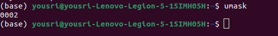
The umask value determines the default permissions to be removed from newly created files and directories. In this case, "0002" restricts write permissions for group and others.
umask Value
The umask is represented by a four-digit number, where each digit represents a specific set of permissions:
|Digit|Details| |-|-| |First Digit| Represents the permissions for the owner (user). |Second Digit| Represents the permissions for the group. |Third Digit| Represents the permissions for others (users who are not the owner or in the group). |Fourth Digit| Represents special permissions (like the sticky bit), but it's rarely used with umask.
The value of each digit in the umask is subtracted from the maximum possible permissions (which is 7 for read, write, and execute) to determine the default permissions for newly created files and directories. Here's how it works:
|Possible Value|Details| |-|-| |0| No permission will be removed. It leaves the corresponding group with full permissions. |1| Execute permission will be removed. This corresponds to the numeric value for execute (1), so newly created files or directories won't have execute permission for that group. |2| Write permission will be removed. This corresponds to the numeric value for write (2), so newly created files or directories won't have write permission for that group. |3| Both write (2) and execute (1) permissions will be removed. This means newly created files or directories won't have write or execute permissions for that group. |4| Read permission will be removed. This corresponds to the numeric value for read (4), so newly created files or directories won't have read permission for that group. |5| Read (4) and execute (1) permissions will be removed. This means newly created files or directories won't have read or execute permissions for that group. |6| Read (4) and write (2) permissions will be removed. This means newly created files or directories won't have read or write permissions for that group. |7| All permissions (read, write, and execute) will be removed. This leaves the corresponding group with no permissions on newly created files or directories.
Here's a breakdown of what each digit in "0002" represents:
|Digit|Description| |-|-| |First Digit (0)| This digit corresponds to the owner's permissions. In "0002," it's set to "0," meaning no permissions are removed from the owner. The owner can retain full read, write, and execute permissions. |Second Digit (0)| This digit corresponds to the group's permissions. In "0002," it's set to "0," meaning no permissions are removed from the group. The group can retain full read, write, and execute permissions. |Third Digit (0)| This digit corresponds to permissions for others (users who are not the owner and not in the group). In "0002," it's set to "0," meaning no permissions are removed from others. Others can retain full read, write, and execute permissions. |Fourth Digit (2)| This digit corresponds to special permissions like the sticky bit. In "0002," it sets the "write" permission to be removed from both the group and others. This means that newly created files and directories will not grant write permissions to the group or others.
Tips
- Use umask to enhance system security by restricting default permissions.
- Adjust the umask value according to your specific security requirements.
Frequently Asked Questions (FAQ)
you may encounter a range of questions that assess your knowledge of file permissions and your ability to manage them effectively. Here are some frequently asked interview questions, including one tricky question:
Q: What are the three basic types of permissions associated with files and directories in Linux?
- Answer: The three basic types of permissions are read (r), write (w), and execute (x).
Q: Explain the difference between the owner, group, and others permissions.
- Answer: The owner refers to the file's creator, the group is a set of users with common permissions, and others are all users who are neither the owner nor in the group.
Q: What is the umask, and how does it affect file permissions when creating new files or directories?
- Answer: The umask is a value that sets the default permissions for newly created files and directories. It's subtracted from the maximum permissions to determine the actual permissions.
Q: How can you change file permissions using the chmod command, and what are some common symbolic and numeric notations used with chmod?
- Answer: You can use chmod to change permissions. Symbolic notation (e.g., chmod u+r) and numeric notation (e.g., chmod 644) are common methods.
Q: Explain the SUID, SGID, and sticky bit permissions and their purposes.
- Answer: SUID (Set User ID), SGID (Set Group ID), and sticky bit permissions have special meanings. SUID allows a program to run as the file's owner, SGID allows a program to run as the file's group, and the sticky bit helps control directory access.
Q: You need to set file permissions in such a way that the owner can read, write, and execute, but the group and others can only read. What chmod command would you use?
- Answer: You can use the following command to achieve this: chmod 744 filename. This sets the owner's permissions to read, write, and execute (4 + 2 + 1 = 7) and the group and others to read-only (4).
Chapter 7: Monitoring and Managing Linux Processes
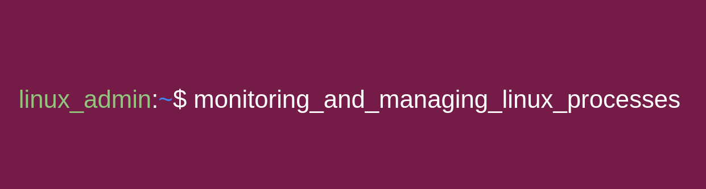
| Info | Details |
|---|---|
| Chapter Introduction | In Chapter 7, we delve into the world of Linux processes. Understanding how to monitor and manage processes is crucial for system administrators and users alike. This chapter covers the basics of processes, controlling jobs, killing processes, and monitoring process activity. |
| Motivation | Processes are fundamental to the functioning of a Linux system. Monitoring and managing processes help ensure system stability, efficient resource utilization, and a responsive environment for users. |
| Objective | In this chapter, we aim to provide a comprehensive understanding of Linux processes, including how to monitor them, control jobs, kill processes, and gather information about their activity. |
| Workspace | Let's explore the key sections of this chapter and the essential commands and concepts you'll encounter. |
Section 1: Processes
Command: ps
| Command | Description |
|---|---|
| ps | Used to list the currently running processes.</br>Provides valuable information about each process, including its process ID (PID), CPU, and memory usage, and more.</br>You can customize the output to view specific details. |
Illustration
Imagine you need to find the PID of a misbehaving process consuming too much CPU. The ps command can help you identify it and take appropriate action.
ps aux | grep <process_name>Here's a breakdown of what each part of the command does:
| Code Breakdown | Description |
|---|---|
| ps | The ps command stands for "process status" and is used to list information about running processes on a Linux system. |
| aux | These are options and arguments passed to the ps command. In this context:</br>a: This option stands for "all processes" and is used to list all processes, including those that are not associated with the terminal. It's particularly useful for viewing processes from all users.</br>u: This option stands for "user-oriented" and provides additional information about the processes, such as the user who started each process and the resource usage (CPU and memory).</br>x: This option stands for "extended information" and is used to display information about processes that are not associated with a terminal, which includes background and daemon processes. |
| | (Pipe) | The pipe symbol (|) is used to send the output of the ps command as input to the grep command. It allows you to filter and search for specific information within the output of the previous command. |
| grep <process_name> | The grep command is used for searching and filtering text. In this context, it is used to find lines in the ps command's output that match the specified <process_name>. |
Here's how the command works:
- ps aux generates a list of all running processes with detailed information. This output includes details like process IDs (PIDs), users, CPU and memory usage, and the command associated with each process.
- The | (pipe) symbol takes the output of ps aux and forwards it as input to the grep command.
- grep <process_name> searches the input (which is the output of ps aux) for lines that contain the specified <process_name>. This can be any string you want to search for within the process information.
When you run this command with the <process_name> replaced by the name of the process you want to find, it filters the output of ps aux and displays only the lines that match the specified name. This is especially useful when you need to locate specific processes among a long list of running processes.
For example, if you want to find a process named "myapp," you would run:
ps aux | grep myapp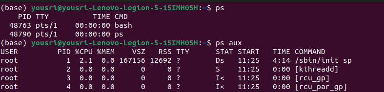
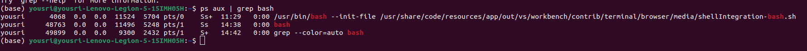
The resulting output will display information about the "myapp" process, including its PID, owner, and other details, making it easier to identify and manage that specific process.
Command: pstree
| Command | Description |
|---|---|
| pstree | The pstree command displays processes in a hierarchical tree structure, making it easier to visualize the relationships between parent and child processes. |
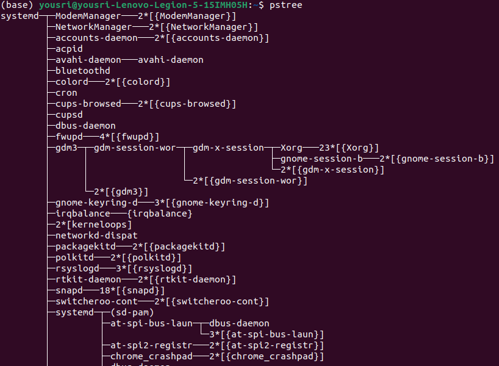
Tips
- Using ps and pstree commands can assist in diagnosing issues and understanding how processes are connected in your system.
Section 2: Controlling Jobs
Commands: bg, fg
The bg and fg commands are used to control jobs running in the background and foreground, respectively. This allows you to switch jobs between these states, helping manage multiple tasks.
|Command|Description| |-|-| |bg|The bg command is used to move a currently stopped (background) job to the background, allowing it to continue running without interaction.</br>This can be helpful when a job was accidentally stopped or when you want to start a job in the background from the beginning.| |fg|The fg command is used to move a background job to the foreground, allowing you to interact with it directly.</br>This can be useful when you want to bring a background job back to the foreground to view its output or provide input.|
Illustration
If you accidentally run a process in the foreground, you can use Ctrl+Z to stop it and then bg to resume it in the background.
In this example, we started a job called "myjob" in the background using &, suspended it with Ctrl+Z, and then resumed it in the background with bg.
# Start a job in the background
myjob &
# Suspend the job (press Ctrl+Z)
[1]+ Stopped myjob
# Resume the job in the background using 'bg'
bg
[1]+ myjob &
# The job is now running in the background.In this example, we started "myjob" in the background, suspended it with Ctrl+Z, and then brought it to the foreground with fg. Now you can interact with the job directly.
# Start a job in the background
myjob &
# Suspend the job (press Ctrl+Z)
[1]+ Stopped myjob
# Resume the job in the foreground using 'fg'
fg
# You can now interact with the job.Why to run jobs on Foreground & Background?
Running jobs in the foreground and background has several benefits, and the choice depends on the specific use case and your preferences. Here are some advantages of running jobs in the foreground and background:
Running Jobs in the Foreground:
- Direct Interaction: Running a job in the foreground allows you to interact with it directly. You can view its output in real-time and provide input when necessary. This is particularly useful for tasks that require your attention.
- Immediate Feedback: You receive immediate feedback from the job, including error messages and progress updates. This can be essential for debugging and monitoring tasks.
- Control: You have fine-grained control over foreground jobs. You can pause, resume, and terminate them easily using keyboard shortcuts and commands.
- Resource Utilization: Foreground jobs typically use system resources more efficiently as they are prioritized for CPU time. This is crucial for tasks that require substantial computational power.
Running Jobs in the Background:
- Multitasking: Running jobs in the background allows you to multitask. You can initiate multiple tasks simultaneously, such as downloading files, running scripts, or compiling code, without waiting for one to finish before starting the next.
- Efficiency: Background jobs don't require your constant attention. This is beneficial when you want to continue working on other tasks or when certain processes take a long time to complete.
- Long-Running Jobs: Background jobs are suitable for tasks that take a considerable amount of time to complete, like large file transfers, backups, or system updates. You can initiate such tasks and continue using your terminal or computer for other purposes.
- Script Automation: Background jobs are often used in scripts and automation to execute tasks without blocking the script's execution.
In summary, choosing whether to run a job in the foreground or background depends on your workflow and the nature of the task. Foreground jobs are suited for tasks that require direct interaction and quick feedback, while background jobs are ideal for multitasking and managing long-running or automated tasks efficiently. The flexibility to control when a job runs in the foreground or background allows you to tailor your workflow to your specific needs.
Command: jobs
| Command | Description |
|---|---|
| jobs | Used to list the jobs that are currently running in the background or stopped. It provides information about these jobs, including their job IDs.</br>The jobs command lists the jobs associated with your current shell session, making it easier to keep track of running tasks. |
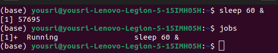
ere's a code example of how to use the jobs command:
# Start a job in the background
sleep 60 &
# List the background jobs
jobsIn this example, we start a simple job using the sleep command, which will sleep for 60 seconds. We append & to run it in the background. Then, we use the jobs command to list the background jobs. The output might look like this:
[1]+ Running sleep 60 &Here, [1]+ indicates the job's job ID (which is 1 in this case), and it is currently running in the background. The job name is "sleep 60," and it's associated with the process running in the background. You can use this information to manage or manipulate jobs, such as bringing them to the foreground or sending signals to them.
Section 3: Killing Processes
Command: kill
|Command|Description| |-|-| |kill| The kill command is used to terminate processes by sending signals. It's a powerful tool for managing misbehaving or unresponsive processes.
Illustration:
To gracefully terminate a process with a specific PID, you can use the following command:
kill <PID>Command: pkill
|Command|Description| |-|-| |pkill| The pkill command allows you to kill processes based on their name or other attributes, making it more convenient for terminating multiple processes at once.|
Examples of command kill
The kill command is used to send signals to processes, allowing you to manage and control them. Here are some code examples of how to use the kill command:
Terminating a Process by PID
You can use the kill command to terminate a specific process by specifying its process ID (PID). In this example, we'll terminate a process with a PID of 1234.
kill 1234Sending a Specific Signal
By default, kill sends the TERM (terminate) signal. You can specify a different signal by using the -s option followed by the signal name or number. For example, to send the HUP (hang-up) signal to a process with PID 5678:
kill -s HUP 5678You can also use the signal number. For the HUP signal, the number is 1:
kill -1 5678Terminating Processes by Name
The kill command can also terminate processes by name. Here, we'll terminate all processes with the name "myprocess."
pkill myprocessThis is useful when you want to terminate multiple processes with the same name.
Forcibly Terminating a Process
If a process doesn't respond to the TERM signal, you can use the KILL signal (signal number 9) to forcefully terminate it. Be cautious when using this, as it doesn't allow the process to perform cleanup operations.
kill -9 1234Remember to replace 1234 with the actual PID of the process you want to terminate or specify the correct signal and process name in the examples. Always use the kill command with caution, as terminating processes can affect system stability.
Available Signals
The kill command can send various signals to processes by specifying their signal names or signal numbers. Here are some common signals used with the kill command:
|Signal|Descripition| |-|-| SIGHUP (1)| The hang-up signal is often used to instruct a process to reload its configuration or restart. For example, to send the SIGHUP signal to a process with PID 5678 SIGINT (2)| This is the interrupt signal. It's sent to terminate a process when you press Ctrl+C in the terminal. SIGKILL (9)| The KILL signal forcefully terminates a process without allowing it to perform any cleanup operations. It's a last-resort option to stop a process. SIGTERM (15)| The TERM signal is used to ask a process to terminate gracefully. It allows the process to perform cleanup operations before exiting. SIGUSR1 (30) and SIGUSR2 (31)| These are user-defined signals that can be used for custom actions within a process. SIGSTOP (19) and SIGCONT (18)| The STOP signal pauses a process, and the CONT signal resumes a paused process. SIGQUIT (3)| This is similar to SIGINT but also produces a core dump of the process, which can be useful for debugging. SIGALRM (14)| The alarm signal is used to set a timer that triggers an action after a specified time. SIGPIPE (13)| This signal is generated when a process attempts to write to a pipe with no readers. It's often used to detect broken pipes.
Caution on Kill -9
In the context of the kill -9 command, "Be cautious when using this, as it doesn't allow the process to perform cleanup operations" means that when you forcefully terminate a process with the KILL signal (signal number 9), the process is abruptly stopped without giving it a chance to perform any final cleanup tasks or release any resources it might be using.
Here's a more detailed explanation:
- Normal Termination (TERM signal): When you use the kill command with the TERM signal (signal number 15), it sends a termination signal to the process. This signal allows the process to perform cleanup operations, save its state, release resources, and gracefully exit. This is the preferred way to terminate a process, as it allows the process to shut down properly.
- Forceful Termination (KILL signal): In contrast, when you use the KILL signal (signal number 9), it sends a signal that forcefully terminates the process immediately. The process doesn't have the opportunity to perform any cleanup operations or release resources. It's essentially halted abruptly, which can lead to data loss, corruption, or other undesirable consequences, especially for critical applications or services.
The reason for caution is that using kill -9 should be a last resort when a process is unresponsive or can't be terminated through regular means. While it ensures that the process is stopped, it does so in a way that can potentially lead to undesirable outcomes. It's generally better to try the TERM signal first and give the process a chance to shut down gracefully.
Here are some considerations:
|Consideration|Details| |-|-| Data Corruption| If the process was in the middle of writing or modifying data, abruptly terminating it using "kill -9" can leave the data in an inconsistent state, potentially leading to data corruption. Resource Leaks| The process may have allocated system resources (such as memory, file handles, or network sockets) that are not released properly when terminated with "kill -9." This can result in resource leaks that can affect system performance. Incomplete Transactions| If the process was involved in transactions or operations that require proper cleanup, such as database updates, files may be left in an inconsistent state.
In summary, "Be cautious when using this, as it doesn't allow the process to perform cleanup operations" is a reminder to use the KILL signal sparingly and only when there are no other options for terminating a process.
Tips to Fix kill-9 Problems
Fixing the problems that may arise after using "kill -9" to forcefully terminate a process can be challenging because the process was abruptly terminated without an opportunity to clean up or release resources. Here are some steps you can take to address potential issues:
|Issue|Solution| |-|-| |Data Recovery|If data corruption occurred, you may need to restore data from backups, if available. Data consistency is crucial, especially if the process was working with critical data. Resource Cleanup|Identify and release any system resources that were allocated by the terminated process. This can include closing file handles, releasing memory, and closing network sockets.</br>Sometimes, the system may automatically clean up certain resources when a process is terminated, but not all resources will be handled this way. Application-Specific Actions|For applications that have their own recovery mechanisms, such as databases, you may need to follow specific recovery procedures provided by the application's documentation. Prevention|To prevent similar issues in the future, consider implementing better process management practices, monitoring, and error handling in your applications.</br>Implementing regular backups and proper data validation can also help recover from data corruption. File System Check|If the abrupt termination of a process affected the file system, it may be necessary to run a file system check (e.g., fsck for ext4) to correct any file system errors. Monitoring and Logging|Improve system monitoring and logging to detect and address issues earlier, reducing the need for "kill -9." Application Restart|After addressing data and resource issues, you may need to restart the application or service that was abruptly terminated.
It's important to note that not all problems resulting from using "kill -9" can be easily fixed, and the extent of damage depends on the specific process and what it was doing when terminated. Prevention and early detection are key to minimizing the impact of such issues in the first place. Additionally, regular backups and robust system monitoring can be invaluable for system recovery.
Command: fsck (File System Check)
A file system check, often referred to as fsck (File System Consistency Check), is used to examine and repair inconsistencies in a file system. The command you use depends on the file system type (e.g., ext4, xfs, btrfs). Let's use an example with the e2fsck command, which is typically used for ext2, ext3, and ext4 file systems. Note that you should run fsck on an unmounted file system or during system boot (depending on the specific scenario).
|Command|Description| |-|-| |fsck| used to check and repair filesystems for errors and inconsistencies.
Command Syntax
sudo fsck [options] [device]Replace [options] with the specific options you want to use, and [device] with the device or partition you want to check.
Switches
Options can include various switches such as -f, -y, and others, each with its specific functionality.
Key Features
|Feature|Destails| |-|-| Filesystem Consistency Check|fsck checks the filesystem for errors and inconsistencies and attempts to repair them.
Example Code
To perform a basic check on the root filesystem with automatic repair if possible:
sudo fsck -y /sudo e2fsck -f /dev/sdXY- sudo: Run the command with superuser privileges as file system checks require elevated permissions.
- e2fsck: The command for checking and repairing ext2, ext3, and ext4 file systems.
- -f: This option forces e2fsck to check the file system even if it appears clean (i.e., without asking for confirmation).
- /dev/sdXY: Replace sdXY with the appropriate device and partition you want to check. For example, if you want to check the first partition on the first SATA drive, it could be /dev/sda1.
Expected Output When you run the e2fsck command, it will display messages indicating the progress of the file system check. If it finds and repairs any inconsistencies, it will report the actions taken. The output can vary depending on the state of the file system.
Here's a simplified example of what the output might look like:
e2fsck 1.45.6 (20-Mar-2020)
/dev/sdXY: clean, XXX/YYY files, ZZZ/TTT blocks
[...]
Pass 1: Checking inodes, blocks, and sizes
Pass 2: Checking directory structure
Pass 3: Checking directory connectivity
Pass 4: Checking reference counts
Pass 5: Checking group summary information
<file system details...>
<additional checks...>
/dev/sdXY: ***** FILE SYSTEM WAS MODIFIED *****
/dev/sdXY: XXX/YYY files (ZZ.Z% non-contiguous), PPP/RRR blocks
[...]The output will indicate the number of files checked, blocks checked, and any actions taken to fix issues. The "FILE SYSTEM WAS MODIFIED" message indicates that changes were made to the file system to correct inconsistencies.
Please replace /dev/sdXY with the correct device and partition that you want to check. Running file system checks on mounted partitions can lead to data corruption, so it's crucial to unmount the file system or perform checks during system boot.
Example Usage
The fsck command is typically used in scenarios where you suspect filesystem errors, want to perform maintenance, or as part of system recovery procedures.
Section 4: Monitoring Process Activity
Command: top
| Command | Description |
|---|---|
| top | The top command is a dynamic and interactive tool that provides real-time information about system processes. It displays CPU and memory usage, process details, and more. |
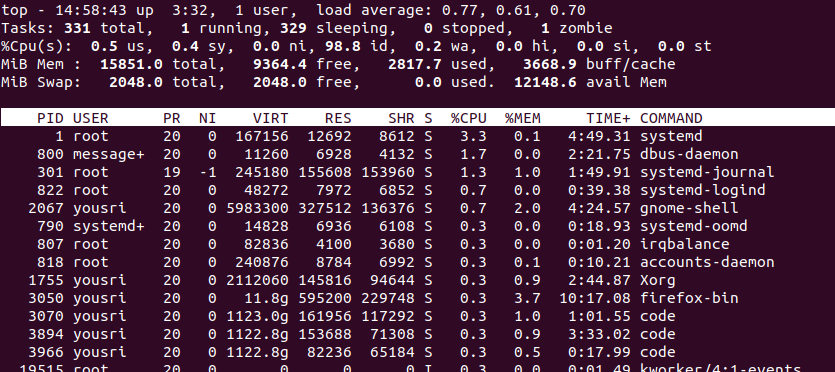
Illustration
Running the top command allows you to monitor the system's performance in real time, helping you identify processes consuming excessive resources.
The top command is a powerful tool for monitoring system performance and displaying information about running processes. Here's a code example of how to use the top command:
topWhen you run the top command without any options, it opens an interactive real-time system monitoring screen. Here's an explanation of some key features and interactions within the top interface:
| Key Feature | Details |
|---|---|
| Load Averages | At the top of the screen, you'll see load averages, which provide an overview of system activity. |
| Tasks | The list of running processes is displayed, sorted by various criteria (e.g., CPU usage by default). You can interact with this list using keyboard shortcuts:</br>Use the arrow keys to navigate.</br>Press "k" to send a signal to a selected process (e.g., "15" for SIGTERM).</br>Press "r" to renice a process (change its priority).</br>Press "q" to quit top. |
| System Information | Various system information, including memory usage, CPU statistics, and more, is displayed in the header. |
| Color Coding | Processes can be color-coded based on their resource usage. |
| Column Sorting | You can sort the list of processes by different columns. For example, press "P" to sort by CPU usage or "M" to sort by memory usage. |
| Filtering | Press "o" to interactively filter the displayed processes based on a specific attribute (e.g., user or command name). |
| Search | Press "F" to search for processes by name. |
| Settings | You can customize top by pressing "z" to access the setup menu, where you can configure which information is displayed and how it's updated. |
| Help | Press "h" to view the help screen, which provides a list of keyboard shortcuts. |
Adjust Process Priority using Command: nice
|Command|Details| |-|-| |nice| used to adjust the scheduling priority of processes in Linux. It allows you to control the execution priority of a command or process.
Here's a code example of how to use the nice command:
nice -n 10 mycommandIn this example:
- nice is the command for adjusting process priority.
- -n 10 specifies the priority level. The value can range from -20 (highest priority) to 19 (lowest priority), with 0 being the default priority. In this case, we set the priority to 10, which is a lower priority.
- mycommand is the command you want to execute with the adjusted priority. Replace this with the actual command or script you want to run.
By using nice, you can influence the scheduling priority of a process. Lower values like -20 or -10 represent higher priorities, while higher values like 10 or 19 represent lower priorities. Lower priority processes will yield the CPU to higher priority processes when competing for resources.
Note that to use nice to increase the priority of a process (give it more CPU time), you typically need superuser privileges or root access, as lowering the priority is more commonly allowed for regular users.
Why the priority level vary from -20 to 19 ?
The priority level in the nice command varies from -20 to 19 for historical and compatibility reasons. This range is based on the traditional Unix and Linux process scheduling model, which uses a priority value that can be adjusted within this range. Here's why the range extends from -20 to 19:
|Reason|Details| |-|-| |Compatibility with Unix| The priority range was inherited from the Unix operating system, where it has been used for decades. This compatibility allows Unix and Unix-like systems to understand and interpret the same priority values. |Negative Values for High Priority| In this range, lower values (i.e., negative values) indicate higher priority. So, -20 represents the highest priority, while -1 is higher priority than 0 (the default) and -19 is the lowest priority. This system makes it intuitive to set priorities. A negative number suggests that a process is important and should be given more CPU time. |0 for Default Priority| The value 0 is the default priority. Processes with this priority level are neither favored nor penalized in terms of CPU allocation. |Positive Values for Lower Priority| Positive values (up to 19) are used to set lower priorities. Positive numbers suggest that a process is less important and should yield CPU time to higher-priority processes.
This priority range and convention have been well-established in Unix and Linux and are commonly understood by system administrators and users. It provides a flexible way to adjust process priorities to ensure that critical tasks receive the necessary CPU time and that non-critical tasks do not monopolize the CPU.
In practice, you'll most often encounter priority adjustments within this -20 to 19 range when using the nice command or system utilities like renice for process management.
Frequently Asked Questions (FAQ)
Q: What is the difference between ps and top commands?
- Answer: ps is a static command for listing processes, while top provides dynamic real-time information about processes and system performance. top is interactive and updates continuously.
Q: When should I use the kill command, and when should I use pkill?
- Answer: Use the kill command when you know the PID of the process you want to terminate. Use pkill when you need to kill processes based on their name or other attributes.
Q: How can you prioritize a specific process over others without killing them?
- Answer: You can use the nice command to change the priority of a process. A higher nice value gives lower priority, while a lower nice value gives higher priority. For example, to increase the priority of a process with PID 123, you can use nice -n -10 -p 123.
Chapter 8: Controlling Services and Daemons
Info
|Info|Description| |-|-| Abstract|In this chapter, you'll learn how to manage system services and daemons on a Linux system. System services are background processes that run continuously and provide various functionalities. You'll explore how to identify automatically started system processes, control system services, and use the systemctl command for managing services. |Motivation|Controlling services and daemons is essential for ensuring the proper functioning of a Linux system. You may need to start, stop, restart, enable, or disable various services to meet the system's requirements. Understanding how to manage services is a fundamental part of Linux administration. Objective| This chapter covers the following key tasks:</br>- Identifying automatically started system processes.</br>- Controlling system services using the systemctl command.</br>- Enabling and disabling services.</br>- Managing service units.</br>- Investigating service unit status and logs.
What is a Daemon?
A daemon (pronounced "dee-mun") is a background process or service in a computer's operating system that runs without direct interaction with a user. Daemons perform various tasks and functions, such as handling system services, background jobs, or providing network services. They typically run continuously, waiting for specific events or conditions to trigger their actions. Daemons are an essential part of the Unix-like operating systems, and they play a crucial role in managing and maintaining the system's functionality.
Some common examples of daemons in Unix-like systems include:
- HTTP Daemon (httpd): Responsible for serving web pages and handling HTTP requests, like Apache or Nginx.
- SSH Daemon (sshd): Manages Secure Shell (SSH) connections and allows remote access to the system securely.
- Print Spooler Daemon: Handles print jobs sent to printers on the system.
- Cron Daemon (cron): Executes scheduled tasks at specified times.
- Systemd (systemd): Acts as a system and service manager, controlling the boot process and managing system services.
Daemons often run in the background, don't have a user interface, and typically have names ending with the letter "d" to indicate that they are daemons (e.g., httpd, sshd). They are essential for the proper functioning and automation of many services and tasks on a computer or server.
Command Definitions
Here are some commands and their descriptions that you'll encounter in this chapter:
|Command |Description| |-|-| systemctl| A command used to control and manage system services. systemctl start \<service>| Starts a service. systemctl stop \<service>| Stops a service. systemctl restart \<service>| Restarts a service. systemctl enable \<service>| Enables a service to start at boot. systemctl disable \<service>| Disables a service from starting at boot.
Illustration
To better understand how to control services and daemons, let's consider an example. Suppose you want to manage the httpd service, which is the Apache HTTP server. You can use systemctl to control it:
To start the httpd service:
systemctl start httpdTo stop the httpd service:
systemctl stop httpdTo restart the httpd service:
systemctl restart httpdTo enable the httpd service to start at boot:
systemctl enable httpdTo disable the httpd service from starting at boot:
systemctl disable httpdThese commands allow you to control the httpd service, making it start, stop, or restart as needed, and configure it to run automatically at system boot or not.
Frequently Asked Questions (FAQ)
Q1: What is the purpose of enabling or disabling a service at boot?
- A1: Enabling a service means it will start automatically when the system boots up, ensuring it's available. Disabling a service prevents it from starting automatically, which can be useful for services that are only needed on-demand.
Q2: How can I check the status of a service?
- A2: You can use the systemctl status \<service> command to check the status and view detailed information about a service.
Q3: What's the difference between starting and enabling a service?
- A3: Starting a service means that it will run immediately, while enabling a service ensures it starts automatically during system boot.
Q4: How can I check the status of a service?
- A4: You can use the systemctl status <service> command to view the status, log, and other information about a service.
Q5: Can I customize service startup options?
- A5: Yes, you can customize service startup options by editing the service unit file. These files are usually found in /etc/systemd/system/ and can be adjusted to set specific behaviors for services.
Chapter 9: Configuring and Securing OpenSSH Service
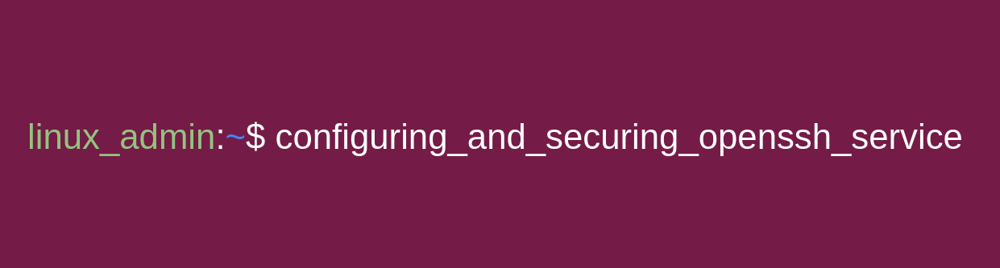
Info
|Info|Details| |-|-| |Abstract|Chapter 9 delves into configuring and securing the OpenSSH service, which is a critical component of remote access and management in Linux. You'll learn how to set up secure remote connections using SSH (Secure Shell), configure SSH key-based authentication for improved security, and customize the OpenSSH service to fit your specific requirements. |Motivation| Secure and controlled remote access to a Linux system is crucial for system administrators. Configuring and securing the OpenSSH service ensures that remote connections are safe and efficient. This chapter equips you with the knowledge to manage access and protect your system from unauthorized access. |Objective| This chapter covers the following key tasks:</br>1- Accessing the remote command line with SSH.</br>2- Configuring SSH key-based authentication for enhanced security.</br>3- Customizing SSH service configuration.</br> 4- Implementing restrictions to control SSH logins.
Command Definitions
Here are some commands and their descriptions that you'll encounter in this chapter:
Command |Description| |-|-| ssh |A command used to connect to a remote system using SSH. ssh-keygen| A tool for generating SSH key pairs. sshd_config (configuration file)| The main configuration file for the OpenSSH server. sshd| The OpenSSH server daemon. authorized_keys (file)| A file used to store public keys for SSH key-based authentication. sshd_config (configuration file)| The main configuration file for the OpenSSH server.
Illustration
To illustrate the concepts in this chapter, let's consider configuring SSH key-based authentication, a common security practice. This provides a more secure way to log in to a remote system:
1- Generate SSH Key Pair:
- You can generate an SSH key pair using the ssh-keygen command:
`bash ssh-keygen -t rsa -b 2048 # This command generates an RSA key pair with a key length of 2048 bits.`
2- Copy the Public Key:
- After generating the key pair, you should copy the public key to the remote server. You can use the ssh-copy-id command or manually copy the contents of the public key file to the ~/.ssh/authorized_keys file on the remote server.
3- Configure SSH:
- You can customize the SSH service by editing the /etc/ssh/sshd_config file. For example, you can change the default SSH port, disable password authentication, and enforce specific security settings.
4- Restart SSH Service:
- To apply the changes made to the SSH configuration, you'll need to restart the SSH service using a command like systemctl restart sshd.
By following these steps, you can configure SSH key-based authentication, which enhances the security of your remote connections by eliminating the need for passwords and relying on cryptographic keys.
Frequently Asked Questions (FAQ)
Q1: Why is SSH key-based authentication more secure than password authentication?
- A1: SSH key-based authentication is more secure because it relies on cryptographic keys rather than passwords. It's resistant to brute-force attacks, and keys can be protected with passphrases for an additional layer of security.
Q2: What is the purpose of customizing the SSH service configuration?
- A2: Customizing the SSH service allows you to adapt it to your organization's security policies and requirements. You can control access, enforce security settings, and improve the service's performance.
Q3: What is SSH key-based authentication, and why is it more secure?
- A3: SSH key-based authentication involves using cryptographic keys for authentication instead of passwords. It's more secure because keys are difficult to guess, and you can protect them with passphrases.
Q4: How do I restrict SSH logins to specific users or groups?
- A4: You can restrict SSH logins by modifying the sshd_config file. For example, you can use the AllowUsers or AllowGroups directives to specify which users or groups are allowed to log in.
Q5: What is the purpose of changing the default SSH port?
- A5: Changing the default SSH port (22) is a security measure to make it harder for unauthorized users to find your SSH service. It's a basic security practice to minimize exposure to common attacks.
Chapter 10: Analyzing and Storing Logs
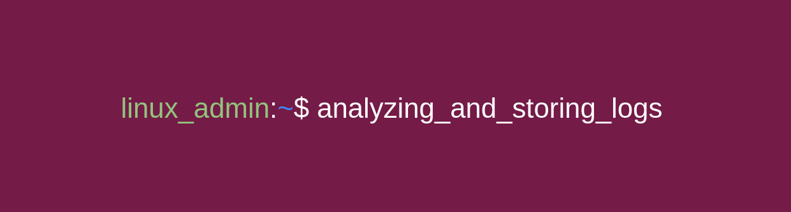
Info
|Info|Details| |-|-| Abstract|Chapter 10 explores the world of system logs and how to analyze and store them effectively. Logs are crucial for troubleshooting, monitoring, and maintaining a healthy Linux system. You'll learn about the system log architecture, various log files, and tools for reviewing and preserving log data. Motivation| Logs are essential for diagnosing system issues, security monitoring, and compliance. Understanding how to access, analyze, and store log data is vital for system administrators. Objective| This chapter covers the following key tasks:</br>1- Understanding the system log architecture.</br>2- Reviewing various log files and their contents.</br>3- Using tools like journalctl to access log entries.</br>4- Configuring persistent logging.</br>5- Maintaining accurate system time for effective log analysis.
Command Definitions
Here are some commands and their descriptions that you'll encounter in this chapter:
Command |Description| |-|-| journalctl| A command for querying and displaying log entries from the systemd journal. logrotate| A tool for rotating, compressing, and managing log files. timedatectl| A command for viewing and configuring system time and date settings. rsyslogd| The system log daemon responsible for managing traditional system logs. syslog-ng| An alternative system log daemon with enhanced features for log management. log files (e.g., /var/log/messages, /var/log/syslog)| Files that store various log data from system services and applications.
Illustration
To understand the concepts related to log analysis and storage, let's look at an example of using the journalctl command to access and view log entries:
Viewing Journal Entries
- You can use journalctl to display log entries from the systemd journal. For instance, to view the last 50 log entries, you can use the following command:
journalctl -n 50Searching for Specific Entries
To search for log entries related to a specific service or application, you can use the -u option. For example, to see logs for the SSH service:
journalctl -u sshPersistent Journal
You can configure your system to maintain a persistent journal that stores log entries across reboots. This can be set using systemd and journalctl options, ensuring log data is preserved for historical analysis.
Maintaining Accurate Time
Accurate system time is critical for log analysis. You can use the timedatectl command to view and configure system time settings, such as time zones and NTP synchronization.
Understanding these commands and practices is crucial for effective log analysis and management, which, in turn, helps maintain a healthy and secure Linux system.
Frequently Asked Questions (FAQ)
Q1: Why are logs important for system administration?
- A1: Logs provide a record of system events and activities, which is crucial for diagnosing issues, monitoring system performance, and ensuring security. They offer insights into what's happening on a Linux system.
Q2: What is log rotation, and why is it necessary?
- A2: Log rotation is the process of archiving and managing log files to prevent them from consuming too much disk space. It's necessary to ensure that log files don't fill up the file system and to preserve historical log data. Tools like logrotate automate this process.
Q3: How can I search for specific log entries in the systemd journal using journalctl?
- A3: You can search for specific log entries using options like -u (for filtering by unit) or -t (for filtering by message ID). For example, journalctl -u ssh shows SSH-related logs.
Q4: What's the purpose of log rotation?
- A4: Log rotation is necessary to manage log files efficiently. It archives older logs, compresses them, and ensures that log files don't consume excessive disk space. It also helps in preserving historical log data for analysis.
Q5: How can I configure log rotation for specific log files?
- A5: You can configure log rotation for specific log files by creating custom log rotation configuration files in /etc/logrotate.d/. These files define rules for rotating and managing specific log files.
Chapter 11: Managing Red Hat Enterprise Linux Networking
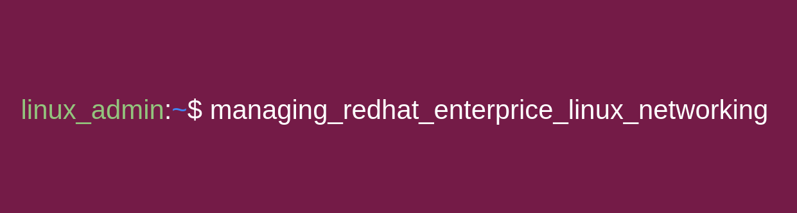
Info
|Info|Details| |-|-| Abstract|Chapter 11 focuses on managing networking in Red Hat Enterprise Linux. Networking is a fundamental aspect of system administration, and understanding how to configure, validate, and troubleshoot network settings is essential for maintaining a smoothly functioning Linux system. Motivation| Networking is a critical component of system administration. A well-configured network is vital for server communication, connectivity, and internet access. It's essential to understand network concepts and how to manage them in Linux. Objective| This chapter covers the following key tasks:</br>1- Exploring networking concepts.</br>2- Validating network configuration.</br>3- Configuring networking using nmcli.</br>4- Editing network configuration files.</br>5- Configuring hostnames and name resolution.
Command Definitions
Here are some commands and their descriptions that you'll encounter in this chapter:
Command| Description| |-|-| ifconfig| A command for viewing and configuring network interfaces. nmcli| A command-line client for NetworkManager, used for network configuration. hostnamectl| A command for viewing and configuring the system's hostname. resolv.conf| A configuration file for DNS name resolution settings. nm-connection-editor| A GUI tool for editing network connections.
Illustration
To grasp the concepts in this chapter, let's look at configuring a network connection using the nmcli command:
List Available Connections
You can use the following command to list available network connections:
nmcli connection showCreate a New Connection
To create a new network connection, you can use a command like this:
nmcli connection add type ethernet ifname eth0- This command creates a new Ethernet connection named eth0.
Modify Connection Settings
To modify connection settings, use the nmcli connection modify command. For instance, to set a static IP address:
nmcli connection modify eth0 ipv4.addresses 192.168.1.10/24Activate a Connection
After configuring a connection, you can activate it using the nmcli connection up command:
nmcli connection up eth0By understanding these commands, you can effectively manage network connections in Red Hat Enterprise Linux, ensuring that your system is properly connected and able to communicate with other devices.
Frequently Asked Questions (FAQ)
Q1: What is NetworkManager, and why is it used in Red Hat Enterprise Linux?
- A1: NetworkManager is a utility used for managing network connections. It simplifies network configuration, providing an intuitive way to manage network interfaces and connections in Linux.
Q2: How can I configure a static IP address using nmcli?
- A2: To configure a static IP address, use the nmcli connection modify command, as shown in the illustration. You can set the IP address, subnet mask, and gateway in the command.
Q3: What is the purpose of setting the hostname in Linux?
- A3: The hostname identifies a system on a network. Setting the hostname is essential for system identification and proper network communication.
Q4: What is the resolv.conf file used for?
- A4: The resolv.conf file contains DNS name resolution settings. It specifies the DNS servers and search domains used for hostname resolution.
Q5: Can I configure network connections through a graphical interface in Red Hat Enterprise Linux?
- A5: Yes, you can use the nm-connection-editor tool to configure network connections through a graphical interface, making it more user-friendly for those who prefer GUI interactions.
Chapter 12: Archiving and Copying Files Between Systems
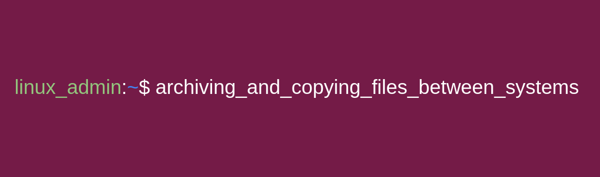
Abstract Introduction
In this chapter, you'll learn about archiving and copying files between systems, a fundamental skill for system administrators. You'll understand how to create compressed archives using tar, copy files securely using scp, and synchronize directories with rsync. These tools are essential for backing up, transferring, and managing files efficiently.
Section 1: Managing Compressed tar Archives
|Info|Details| |-|-| Motivation| Efficiently store and transfer groups of files and directories while preserving file permissions and structure. Objective| Learn how to create and manage tar archives. Illustration| Imagine you have a directory with multiple files, and you want to create an archive of these files.
Command: tar
| Command | Description |
|---|---|
| tar | Used for creating, extracting, and managing archive files. It stands for "tape archive" and is commonly used on Unix-like operating systems. |
| tar -cvf archive.tar files/ | Create a tar archive (-c for create, -v for verbose, -f to specify the archive file) from the "files/" directory. |
Code Example
tar -cvf archive.tar files/Expected Output: The command will create an archive named "archive.tar" containing the files from the "files/" directory.
Switchs
The tar command in Linux and Unix-like operating systems supports various switches (options) that allow you to control its behavior when creating, extracting, or managing archive files. Here's an explanation of some commonly used tar switches:
|Switch|Description| |-|-| |-c (Create)|Description: This switch is used to create a new archive file. You typically use it when you want to bundle a set of files or directories into a single archive.</br>Example: tar -cf archive.tar file1.txt file2.txt |-x (Extract)|Description: Use this switch to extract the contents of an existing archive. It's employed when you want to retrieve the files and directories from an archive.</br>Example: tar -xf archive.tar |-t (List)|Description: This switch is used to list the contents of an archive without extracting them. It provides an inventory of the files and directories within the archive.</br>Example: tar -tf archive.tar |-z (gzip Compression)|Description: When creating an archive, you can use the -z switch to enable gzip compression. This results in a compressed archive file with a ".tar.gz" or ".tgz" extension.</br>Example: tar -czf archive.tar.gz files... |-v (Verbose)|Description: The -v switch activates verbose mode, which displays detailed information about the archiving or extracting process. It's useful for tracking progress.</br>Example: tar -cvf archive.tar files... |-f (File)|Description: The -f switch is used to specify the archive file's name. You should always provide this switch followed by the archive file's name when creating, extracting, or working with archives.</br>Example: tar -cf mydata.tar files... |-C (Change Directory)|Description: The -C switch allows you to specify a different directory as the extraction destination. This is useful when you want to extract files to a specific location.</br>Example: tar -xf archive.tar -C /path/to/destination |--delete (Remove Files)|Description: The --delete switch enables you to remove specific files from an existing archive. You provide the names of the files you want to remove after this switch.</br>Example: tar --delete -f archive.tar files... |--preserve-permissions|Description: When creating an archive, using --preserve-permissions preserves the original file permissions and ownership information. This is crucial for maintaining file integrity.</br>xample: tar --preserve-permissions -cf archive.tar files... |--exclude (Exclude Files)|Description: The --exclude switch allows you to specify a pattern for excluding files based on filenames or patterns when creating an archive.</br>Example: tar --exclude='*.log' -cf archive.tar directory |-r (Append)|Description: The -r switch is used for appending files to an existing archive. It's handy when you need to add more files to an archive without creating a new one.</br>Example: tar -rf archive.tar additional_file.txt
Key Features
Command Description: The tar command is used for creating, extracting, and managing archive files. It stands for "tape archive" and is commonly used on Unix-like operating systems.
|Feature|Description| |-|-| Create an Archive|Syntax: tar -cf archive.tar files...</br>Description: This command creates a new archive file named archive.tar and adds the specified files to it.</br>Example: tar -cf mydata.tar file1.txt file2.txt</br>Key Note: You can use the -c option to create a new archive. |Extract an Archive|Syntax: tar -xf archive.tar</br>Description: This command extracts the contents of the archive.tar archive file into the current directory.</br>Example: tar -xf mydata.tar</br>Key Note: Use the -x option to extract an archive. |List Archive Contents|Syntax: tar -tf archive.tar</br>Description: This command lists the contents of the archive.tar archive file without extracting them.</br>Example: tar -tf mydata.tar</br>Key Note: The -t option is used to list archive contents. |Compress with gzip|Syntax: tar -czf archive.tar.gz files...</br>Description: This command creates a compressed archive using gzip compression. It adds the specified files to the archive.</br>Example: tar -czf mydata.tar.gz file1.txt file2.txt</br>Key Note: The -z option enables gzip compression during archiving. |Verbose Output|Syntax tar -cvf archive.tar files...</br>Description: This command displays detailed information about the archiving process. It's useful for tracking progress.</br>Example: tar -cvf mydata.tar file1.txt file2.txt</br>Key Note: The -v option enables verbose mode. |Extract to a Different Directory|Syntax: tar -xf archive.tar -C /path/to/destination</br>Description: This command extracts the contents of the archive.tar archive file to the specified destination directory.</br>Example: tar -xf mydata.tar -C /mydata/backup</br>Key Note: Use the -C option to specify the destination directory. |Remove Files|Syntax: tar --delete -f archive.tar files...</br>Description: This command allows you to remove specific files from an existing archive</br>Example: tar --delete -f mydata.tar file1.txt</br>Key Note: The --delete option is used for file removal within an archive. |Preserve Permissions and Ownership|Syntax: tar --preserve-permissions -cf archive.tar files...</br>Description: This command preserves file permissions and ownership when creating an archive.</br>Example: tar --preserve-permissions -cf mydata.tar file1.txt</br>Key Note: Use the --preserve-permissions option to maintain original permissions. |Exclude Files|Syntax: tar --exclude=pattern -cf archive.tar directory</br>Description: You can exclude files based on a pattern when creating an archive.</br>Example: tar --exclude='*.log' -cf mydata.tar mydata_directory</br>Key Note: The --exclude option filters out files matching the pattern. |Append Files to an Archive|Syntax: tar -rf archive.tar files...</br>Description: This command appends new files to an existing archive.</br>Example: tar -rf mydata.tar additional_file.txt</br>Key Note: Use the -r option to append files to an archive.
Section 2: Copying Files Between Systems Securely with scp
|Info|Details| |-|-| Motivation| Safely and securely copy files between local and remote systems using secure shell (SSH). Objective| Learn how to use the scp command for secure file copy. Illustration| You need to copy a file from your local system to a remote server.
Command: scp
Command| Description| |-|-| |scp|Stands for "secure copy," and it is a command-line utility in Unix-like operating systems used for securely copying files and directories between local and remote hosts. It uses the SSH (Secure Shell) protocol for secure data transfer. scp localfile.txt user@remote_server:/path/to/destination/| Copy "localfile.txt" to a remote server using the SSH protocol. Replace "user," "remote_server," and the destination path as needed.
Code Example:
scp localfile.txt user@remote_server:/path/to/destination/Expected Output: The file "localfile.txt" is securely copied to the specified destination on the remote server.
Commonly Used Switches
Here are some commonly used switches with scp:
|Switch|Details| |-|-| -P (Port)|Syntax: -P port</br>Description: Use this switch to specify a custom SSH port when connecting to the remote host. The default SSH port is 22.</br>Example: scp -P 2222 local_file.txt remote_user@remote_host:/path/ -p (Preserve File Attributes)|Syntax: -p</br>Description: The -p switch preserves file attributes, including permissions, timestamps, and ownership.</br>Example: scp -p local_file.txt remote_user@remote_host:/path/ |-r (Recursive)|Syntax: -r</br>Description: The -r switch is used to recursively copy directories and their contents. It's essential when dealing with directories.</br>Example: scp -r local_directory remote_user@remote_host:/path/ |-q (Quiet Mode)|Syntax: -q</br>Description: In quiet mode, scp suppresses non-error messages, making the operation less verbose.</br>Example: scp -q local_file.txt remote_user@remote_host:/path/ |-v (Verbose Mode)|Syntax: -v</br>Description: The -v switch activates verbose mode, providing detailed information about the transfer process.</br>Example: scp -v local_file.txt remote_user@remote_host:/path/ |-C (Compression)|Syntax: -C</br>Description: This switch enables compression during the transfer, reducing the bandwidth used in the process.</br>Example: scp -C local_file.txt remote_user@remote_host:/path/ |-l (Limit Bandwidth)|Syntax: -l limit</br>Description: Use the -l switch to limit the bandwidth of the scp transfer, ensuring it doesn't consume the entire available bandwidth.</br>Example: scp -l 1000 local_file.txt remote_user@remote_host:/path/ |-F (SSH Config File)|Syntax: -F ssh_config_file</br>Description: You can specify an alternative SSH configuration file with the -F switch.</br>Example: scp -F /path/to/ssh_config local_file.txt remote_user@remote_host:/path/ -i (Identity File)|Syntax: -i identity_file</br>Description: The -i switch allows you to specify the path to an SSH identity (private key) file for authentication.</br>Example: scp -i /path/to/private_key local_file.txt remote_user@remote_host:/path/
Key Features
|Feature|Description| |-|-| |Secure File Transfer|scp ensures secure file transfers over an encrypted SSH connection, making it suitable for sensitive data. Support for Remote Copy|scp can copy files and directories from the local system to a remote system or from a remote system to the local system. Preservation of Permissions|scp can preserve file permissions and ownership during file transfer, ensuring that file attributes are maintained. |Password or Key Authentication|scp supports both password and SSH key-based authentication for connecting to remote hosts. |Copying Between Hosts|Description: scp allows you to copy files between different hosts, including remote-to-local, local-to-remote, and even remote-to-remote transfers.</br>Example: scp user1@host1:/path/to/file user2@host2:/destination/ |Preserve File Attributes|Description: When copying files, scp can preserve file attributes like permissions, timestamps, and ownership.</br>Example: scp -p local_file.txt remote_user@remote_host:/path/ |Recursively Copy Directories|Description: The -r switch (explained later) allows you to recursively copy entire directories and their contents.</br>Example: scp -r local_directory remote_user@remote_host:/path/
Basic Usage
- Copy from Local to Remote:
scp file.txt user@remote-host:/path/to/destination- Copy from Remote to Local:
scp user@remote-host:/path/to/file.txt /local/destinationExample with Custom Port:
- Copy with Custom SSH Port:
`typescript scp -P 2222 file.txt user@remote-host:/path/to/destination`
Section 3: Synchronizing Files Between Systems Securely with rsync
|Info|Details| |-|-| Motivation| Keep files and directories in sync between systems efficiently. Objective| Learn how to use rsync for synchronization. Illustration| You have a directory with critical files on your local system, and you want to synchronize it with a remote server regularly.
Command: rsync
|Command| Description| |-|-| |rsync|a command-line utility for efficiently copying and synchronizing files and directories between a source and a destination. It is particularly useful for remote file synchronization and for maintaining the same data on multiple systems.| rsync -avz source/ user@remote_server:/path/to/destination/| Synchronize files and directories from "source/" to the remote server using SSH. Options include archive mode (-a), verbose output (-v), and compression (-z).
Command Syntax
rsync [options] source destinationSwitches
|Switch|Details| |-|-| |-a, --archive|Syntax: rsync -a source destination</br>Description: The -a switch stands for archive mode and is a common choice for most synchronization tasks. It preserves permissions, timestamps, and other file attributes. |-v, --verbose|Syntax: rsync -v source destination</br>Description: The -v switch enables verbose mode, which provides detailed output, including the names of the files being transferred. -r, --recursive|Syntax: rsync -r source destination</br>Description: The -r switch is used to copy directories and their contents recursively. -z, --compress|Syntax: rsync -z source destination</br>Description: The -z switch enables compression during the data transfer, which can reduce network traffic for remote synchronization. -h, --human-readable|Syntax: rsync -h source destination</br>Description: The -h switch displays file sizes in a human-readable format, making it easier to understand. -n, --dry-run|Syntax: rsync -n source destination</br>Description: The -n switch performs a dry run, showing what would be done without actually making changes. It's useful for previewing the synchronization operation.
Key Features
|Feature|Description| |-|-| Incremental Transfer| Rsync only transfers the differences between the source and destination, reducing data transfer time. Remote Synchronization| Rsync can synchronize files between local and remote systems using SSH. Partial Transfers| If a transfer is interrupted, rsync can resume from where it left off. Bandwidth Limitation| You can limit the bandwidth used by rsync during transfers. Filtering| Rsync allows you to include or exclude specific files or directories from synchronization.
Example Usage
- Synchronize a local directory to a remote server:
`ruby rsync -avz /local/directory/ user@remote_server:/remote/directory/`
- Synchronize a remote directory to a local directory:
`ruby rsync -avz user@remote_server:/remote/directory/ /local/directory/`
Code Example
rsync -avz source/ user@remote_server:/path/to/destination/- Expected Output: Files and directories from the "source/" directory are synchronized with the specified location on the remote server.
Additional Important Notes
- When using scp and rsync, it's essential to have the appropriate SSH key or password access for secure file transfer.
- Both scp and rsync provide progress indicators during the file transfer process.
- Use Cases:
- scp is suitable for secure, point-to-point file transfers, such as sending a single file or a few files securely to another system.
- rsync is ideal for regular backups, mirroring directories, and keeping multiple systems in sync. It's also good for remote synchronization over SSH.
When to Use [scp, rsync]
|Command|Use Case| |-|-| |Use scp when|You need to perform a one-time secure file copy.</br> You want to send a single or a few files securely to another system.</br> The task is simple and doesn't require ongoing synchronization. Use rsync when|You need to synchronize directories or files regularly, efficiently, and with minimal data transfer.</br> You're working with a large number of files that may change over time.</br> You want to perform backups or mirror data to ensure that source and destination are identical.</br> You want to transfer data between systems securely using SSH.
Frequently Asked Questions (FAQ)
Q: What is the difference between archiving and compressing files?
- Answer: Archiving involves bundling multiple files or directories into a single file, preserving their structure and permissions. Compression, on the other hand, reduces the size of a file or archive to save storage space. Often, archiving and compression are combined, as seen in tools like tar.
Q: How do I extract the contents of a tar archive?
- Answer: To extract the contents of a tar archive, use the tar -xvf archive.tar command. The -x option stands for extract. This will unpack the files and directories from the archive.
Q: Is scp the only way to securely copy files between systems?
- Answer: scp is a widely used method for secure file copy, but there are other options, such as using SFTP (SSH File Transfer Protocol) or tools like rsync with SSH. The choice depends on your specific requirements and preferences.
Q: Can I use rsync to synchronize files between two local directories?
- Answer: Yes, rsync can be used to synchronize files between local directories. You can specify local paths as the source and destination in the rsync command.
Q: What are the advantages of using compression when creating tar archives?
- Answer: Using compression with tar archives reduces the size of the archive, making it more efficient for storage and transfer. Compression can also save bandwidth and time during file transfers.
Chapter 13: Installing and Updating Software Packages
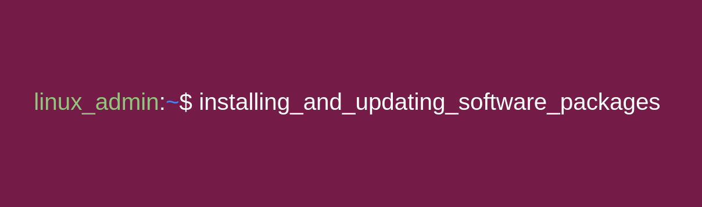
Chapter Info
|Info|Details| |-|-| Abstract Introduction|Chapter 13 dives into the critical task of managing software packages on a Linux system. Efficiently installing, updating, and maintaining software is essential for a well-functioning system. In this chapter, you'll learn how to attach systems to subscriptions, work with RPM software packages, and use Yum for software management. Chapter Motivation|Software is the heart of a computer system, and its proper management is vital for system administrators and users. Knowing how to attach systems to subscriptions for software updates, work with RPM packages, and use package managers like Yum is crucial for maintaining system stability and security.
Section 1: Attaching Systems to Subscriptions for Software Updates
Info
|Info|Details| |-|-| Motivation| Attaching systems to subscriptions allows you to receive software updates, security patches, and support from software providers. Objective| By the end of this section, you will know how to attach your system to software subscriptions. Workspace| You'll need a system running a Linux distribution that uses subscription-based software management. Illustration| We'll illustrate the process of attaching a system to a Red Hat subscription, including the commands to use.
Command: subscription-manager
|Command| Description| |-|-| |subscription-manager| is a command-line tool for attaching systems to subscriptions.
Syntax
subscription-manager [options]Example Usage
- Attach a system to a Red Hat subscription:
subscription-manager register --username=myusername --password=mypasswordKey Features
|Feature|Details| |-|-| register| Register a system. --username and --password| Provide authentication credentials.
Section 2: RPM Software Packages and Yum
Info
|Info|Details| |-|-| Motivation| RPM packages are a common way to distribute software on Linux. Yum is a package manager that simplifies package installation, update, and removal. Objective| After completing this section, you will understand RPM packages and how to manage software using Yum. Workspace| Ensure you have a Linux system with Yum installed. Illustration| We'll explore how to work with RPM packages, install software, and use Yum for software management.
Command: rpm, yum
|Command| Description| rpm| is a command-line tool for working with RPM packages. yum| is a package manager for software installation and management.
Syntax
rpm [options] package.rpm, yum [options] command.Example Usage
- Install an RPM package:
`bash rpm -ivh package.rpm`
- Update software with Yum:
`bash yum update package-name`
Key Features
|Feature|Details| |-|-| |rpm -i| This switch indicates that you want to install the specified package. |rpm -v| This switch enables verbose mode, providing more detailed information about the installation process. |rpm -h| This switch displays hash marks (#) as the package installation progresses, giving you a visual indication of the installation progress. |yum update| Update installed packages.
Frequently Asked Questions (FAQ)
Q: How do I attach a Linux system to a subscription for software updates using subscription-manager?
- Answer: You can attach a system to a subscription using a command like:
`bash subscription-manager register --username=myusername --password=mypassword,`
- where myusername and mypassword should be replaced with your credentials.
Q: What is the basic syntax for installing an RPM package using rpm?
- Answer: To install an RPM package, you can use the rpm -ivh package.rpm command, replacing package.rpm with the name of the RPM package you want to install.
Q: How can I update software packages using Yum?
- Answer: To update software packages with Yum, use the yum update package-name command, where package-name is the name of the package you want to update.
Q: How do I register my system for Red Hat software updates?
- A: You can use the subscription-manager command to register your system. Replace myuser and mypassword with your Red Hat account credentials.
Q: What is RPM and Yum, and how do they differ in package management?
- A: RPM is a low-level package manager for individual packages, while Yum is a high-level package manager that handles dependencies and simplifies package installation and updates on Red Hat-based systems.
Chapter 14: Accessing Linux File Systems
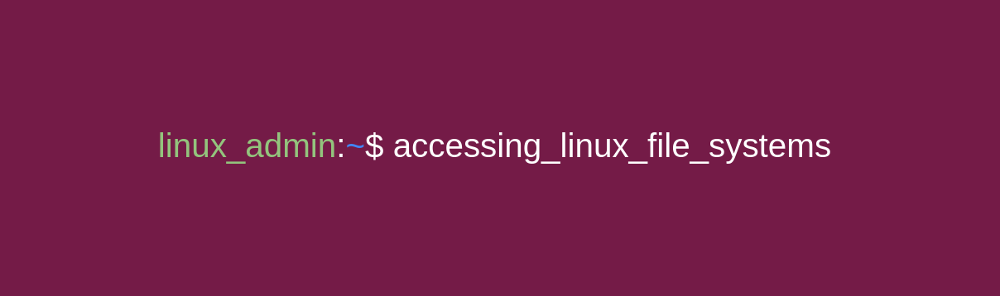
Info
|Info|Detials| |-|-| |Abstract Introduction|Chapter 14 focuses on accessing and interacting with Linux file systems. Understanding how to identify, mount, unmount, make links, and locate files on the system is crucial for effective system administration. Motivation|Accessing and managing file systems is a fundamental aspect of Linux system administration. It enables the organization of data, storage management, and efficient data retrieval. |Objective|By the end of this chapter, you should be able to identify different file systems and devices, mount and unmount file systems, create links between files, and locate files on the Linux system. |Workspace|This chapter covers the following sections and topics:</br>- Identifying File Systems and Devices</br>- Mounting and Unmounting File Systems</br>- Making Links Between Files</br>- Locating Files on the System |Illustration|In this chapter, you'll learn how to interact with file systems and devices, perform various file operations, and efficiently locate files on your Linux system.
Commands Used: [ds, lsblk, mount, unmount, ln, find]
Here are the key commands used in this chapter:
|Command|Detials| |-|-| |df| Display disk space usage. |lsblk| List block devices. |mount| Mount a file system. |umount| Unmount a file system. |ln| Create links between files. |find| Search for files and directories.
Additional Notes
- Properly identifying and managing file systems is essential for storage management.
- Creating symbolic and hard links allows for efficient data organization and access.
- The find command is a powerful tool for locating files on the system based on various criteria.
Section 1: Identifying File Systems and Devices
|Info|Details| |-|-| |Motivation|Identifying file systems and devices is crucial for understanding the storage infrastructure of a Linux system. This knowledge is fundamental for effective system administration. |Objective|In this section, you will learn how to identify different file systems and block devices used on your Linux system.
Commands Used: df, lsblk
|Command|Description|Syntax|Key Feature|Switchs| |-|-|-|-|-| df| Stands for "disk free" and is used to display information about disk space usage on your system. It provides details about the file system, total space, used space, available space, and mount points.|df [options] [file\|directory]|- Helps you monitor disk space usage on mounted file systems.</br>- Useful for identifying file systems and their mount points.|-h: Human-readable format. Display sizes in a more understandable format, such as kilobytes, megabytes, etc. lsblk| Used to list information about block devices in a tree-like structure. It provides details about disks, partitions, and their relationships.|lsblk [options]|- Lists block devices in a structured format, making it easy to understand the hierarchy.</br>- Useful for identifying disks and partitions on your system.| -a: Show all devices.</br>-b: Display sizes in bytes.</br>-d: List all entries, including empty ones.</br>-f: Display full device names.
Example Usage
df command:
- Display disk space usage for all mounted file systems in human-readable format:
`bash df -h` - Display disk space usage for a specific directory:
`bash df -h /path/to/directory`
lsblk command:
- List all block devices, including empty ones:
`css lsblk -a`
- Display sizes in bytes for all block devices:
`css lsblk -b`
- Show full device names for all block devices:
`lsblk -f`
Illustration the Usage
Let's illustrate the use of these commands:
- Running df -h will display information about disk space usage, showing the file systems, their sizes, and mount points.
- Using lsblk will list the block devices, providing information about disks, partitions, and their relationships.
Section Note
Properly identifying file systems and block devices is the first step in managing storage efficiently. This knowledge helps administrators make informed decisions about disk space allocation and organization.
Section 2: Mounting and Unmounting File Systems
|Info|Details| |-|-| |Motivation|Mounting and unmounting file systems are essential tasks for a Linux system administrator. Understanding how to attach and detach file systems ensures efficient data management and accessibility. |Objective|In this section, you will learn how to mount and unmount file systems in Linux.
Commands Used: mount, unmount
|Command|Description|Syntax|Key Feature|Swithes| |-|-|-|-|-| mount| used to attach (mount) a file system to the system's directory tree. It allows you to access and interact with the files and directories within that file system.|mount [options] device_name directory|- Enables access to data stored on a device or partition.</br>- Important for incorporating external drives, network shares, and additional storage.|-t: Specify the file system type.</br>-o: Mount options. umount| used to detach (unmount) a previously mounted file system from the system's directory tree. This operation is necessary before physically removing a storage device or unmounting network shares.|umount [options] directory|- Safely unmounts file systems, ensuring data integrity.</br>- Necessary before disconnecting removable media or network shares.|-l: Lazy unmount. Detach the file system as soon as it is not in use.</br>-f: Force unmount. Detach the file system forcibly, even if it's in use.
Example Usage
For mount command:
- Mount an ext4 file system on /dev/sdb1 to the directory /mnt/data:
`bash mount -t ext4 /dev/sdb1 /mnt/data`
- Mount an NFS share from a remote server with specific options:
`bash mount -t nfs -o rw,hard,intr server:/share /mnt/nfs`
For umount command:
- Unmount a file system:
`bash umount /mnt/data`
- Forcefully unmount a file system:
`bash umount -f /mnt/data`
Illustration of Usage
Let's illustrate how to use these commands:
- To mount a file system from a device, use the mount command with the appropriate device name and target directory.
- To unmount a file system, use the umount command followed by the directory where the file system is mounted.
What is the Default File system Type in Mount Command?
In this Example: mounts the file system on /dev/sdb1 to the directory /mnt/data.
mount /dev/sdb1 /mnt/dataThe mount command does not have a default file system type. When you use the mount command without specifying the file system type with the -t switch, it typically relies on the /etc/fstab file to determine the correct file system type based on the device or file you are trying to mount.
The /etc/fstab file is a system configuration file that contains information about disk drives and partitions and their associated file system types. It's used by the mount command to determine the appropriate file system type when mounting devices.
For example, if you have an entry in /etc/fstab that specifies that a particular device is formatted as ext4, when you use mount to mount that device, it will automatically recognize the file system type as ext4.
So, in summary, the default file system type for the mount command is determined based on the information provided in the /etc/fstab file. If no matching entry is found in /etc/fstab, you will need to explicitly specify the file system type using the -t switch when using the mount command.
Section Note
Properly mounting and unmounting file systems is crucial to avoid data corruption and maintain system stability.
Section 3: Making Links Between Files
|Info|Details| |-|-| Motivation|Creating links between files in Linux allows you to reference and access the same data from multiple locations. This can be useful for creating shortcuts or managing files efficiently. Objective|In this section, you will learn how to create hard and symbolic links between files and directories.
Commands Used: ln
|Command|Description|Syntax|Key Feature|Switches| |-|-|-|-|-| ln|used to create links between files and directories. There are two main types of links in Linux:</br>- Hard Links: Hard links are essentially multiple directory entries that point to the same inode, which contains the file's data. Changes made to one hard link affect all other hard links to the same inode.</br>- Symbolic Links (Symlinks): Symbolic links, also known as symlinks, are special files that point to another file or directory. They are more like shortcuts in Windows. Changes made to the original file do not affect symlinks.|ln [options] target link_name</br></br>SoflLink: ln -s target link_name|- Hard links don't occupy additional disk space.</br>- Changes made to one hard link are reflected in all hard links.</br>- Symlinks occupy their own disk space.</br>- Changes to the original file do not affect symlinks.|-s: Create symbolic links (symlinks) instead of hard links.</br>-t: Specify the target directory where the link should be created.
Code Example
- Hard Link:
`bash ln /path/to/original-file /path/to/hard-link`
- Soft Link:
`bash ln -s /path/to/original-file /path/to/symlink`
Example Usage
- Create a hard link named "backup.txt" for an existing file named "data.txt" in the same directory:
`bash # This creates a hard link in the same directory. ln data.txt backup.txt`
- Create a symbolic link named "shortcut" for an existing file named "document.pdf" in a specific directory, /home/user/documents:
`bash # This creates a symbolic link in a different directory. ln -s /home/user/documents/document.pdf /path/to/shortcut`
- Create a symbolic link for a directory, specifying the target directory using the -t switch:
`bash # This creates a symbolic link in the specified target directory. ln -s -t /path/to/target-directory /path/to/symlink-directory`
Illustration
Let's illustrate the creation of hard and symbolic links:
- To create a hard link, use the ln command with the target file and the desired link name.
- To create a symbolic link, use the ln -s command with the target file or directory and the symlink name.
Key Notes
- Hard links are created by default when you use the ln command without the -s switch. To create symbolic links, use the -s switch.
- When creating symlinks, make sure to provide the full path to the target file or directory.
- Hard links cannot span different file systems, while symlinks can.
Section Note
Creating links allows you to access and manage files more efficiently, and it's an important concept for Linux administrators.
Section 4: Locating Files on the System
Info
|Info|Details| |-|-| Motivation|Locating files on the Linux system is an essential skill for system administrators. Whether you're searching for configuration files or specific data, understanding how to locate files efficiently is crucial. Objective|In this section, you will learn how to search for files and directories using commands like find and locate.
Commands Used: find. locate
|Command|Description|Syntax|Key Feature|Switches| |-|-|-|-|- |find| The find command is a powerful tool for searching and locating files and directories on the file system.</br>It searches for files and directories based on various criteria like names, types, sizes, and more.|find [path] [expression]</br></br>[path] is the directory to start the search from, and [expression] specifies the search criteria.| - Powerful and flexible file search and location capabilities.</br>- Supports various search criteria like name, type, size, and timestamps.</br>- Allows executing commands on the found items using -exec.| -name pattern: Search for files and directories with a specific name pattern.</br>-type type: Specify the type of files to search for (e.g., -type f for files, -type d for directories).</br>-size size: Search for files of a specific size.</br>-exec command {} \;: Execute a command on the found items.</br>-ctime n: Search for files created within the last n days.</br>-mtime n: Search for files modified within the last n days.</br>-maxdepth levels: Limit the search depth to a specified number of directory levels.</br>-mindepth levels: Specify the minimum directory depth for the search. |locate| The locate command is used for quickly searching for files on the system using a pre-built database.</br>It is faster than find but may not have the most up-to-date results.|locate [options] pattern</br></br>[options] are various search options, and pattern is the search pattern.| - Fast file search using a pre-built database.</br>- Case-insensitive and regular expression search support.</br>- Can limit the number of results with -l.</br>- Shows statistics about the database using -S.| -i: Perform a case-insensitive search.</br>-r: Treat the search pattern as a regular expression.</br>-e: Treat the search pattern as an exact match.</br>-b: Match the pattern only at the beginning of the filename.</br>-l n: Limit the number of results to n.</br>-S: Show statistics about the database.
Illustration
Let's illustrate the usage of the find and locate commands:
- To find all files and directories with a specific name, you can use the find command:
find /path/to/search -name "filename"- To search for files containing a particular text pattern, you can use the grep command with find:
find /path/to/search -type f -exec grep -l "pattern" {} \;- To use the locate command to quickly find files with a given pattern:
locate pattern- Update the locate database if it's not up-to-date:
`bash sudo updatedb`
find Comand:
- Search for all files and directories with the name "file.txt" under the current directory:
find . -name "file.txt"- Find all files modified in the last 7 days in the /data directory and execute the ls -l command on them:
`bash find /data -type f -mtime -7 -exec ls -l {} \;`
- Search for all files larger than 10MB under the home directory:
`bash find ~/ -type f -size +10M`
locate Command:
- Search for all files and directories containing "document" in their name:
locate document- Perform a case-insensitive search for files containing "backup" at the beginning of their names:
`bash locate -i -b "^backup"`
- Show statistics about the database:
`bash locate -S`
Key Notes
- The find command provides more advanced and flexible search capabilities compared to locate.
- Use find when you need to search for files with specific criteria.
- Use locate for quick searches based on filenames.
- The find command offers more granular control over file searches, while locate is faster but may not have the most up-to-date results.
find Comand:
- Powerful and flexible file search and location capabilities.
- Supports various search criteria like name, type, size, and timestamps.
- Allows executing commands on the found items using -exec.
locate Command:
- Use -r with locate for regular expression search.
- Use -i for case-insensitive searches with locate.
Section Note
Mastering these commands is essential for efficiently locating files and directories on a Linux system.
Frequently Asked Questions (FAQ)
Q1: What is the purpose of identifying file systems and devices?
- Answer: Identifying file systems and devices is essential for managing storage in Linux. It helps you understand which file systems are available, what devices are connected, and how they are organized. This knowledge is crucial for tasks such as mounting, unmounting, and managing storage effectively.
Q2: When should I use the mount command?
- Answer: You should use the mount command when you need to make the content of a storage device accessible to your file system. It's typically used to mount partitions, external drives, network shares, and other storage devices to specific directories in your file system.
Q3: What's the difference between mounting and unmounting a file system?
- Answer: Mounting is the process of making the content of a storage device accessible by attaching it to a directory in the file system hierarchy. Unmounting, on the other hand, is the process of detaching the mounted file system, making it inaccessible. Mounting makes data available, while unmounting removes that accessibility.
Q4: How can I identify the file systems and devices on my Linux system?
- Answer: You can identify file systems and devices using commands like df and lsblk. The df command provides information about disk space usage and mounted file systems. The lsblk command displays information about block devices, including disks and partitions.
Q5: What are symbolic links (symlinks)?
- Answer: Symbolic links, often referred to as symlinks, are files that act as pointers or references to other files or directories. They provide a convenient way to reference files and directories without duplicating data. Symlinks are created using the ln command with the -s switch.
Chapter 15: Using Virtualized Systems
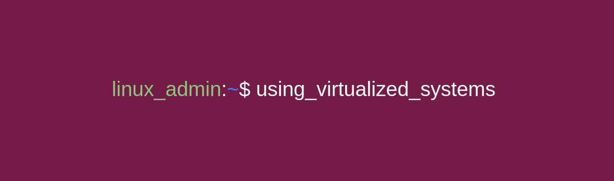
Info
|Info|Details| |-|-| |Abstract Introduction|Chapter 15 explores the world of virtualization on Linux. Virtualization allows you to run multiple operating systems on a single physical machine. It's widely used for server consolidation, testing environments, and development. This chapter delves into managing and creating virtual machines using tools like KVM (Kernel-Based Virtual Machine). |Motivation|Understanding virtualization is crucial in modern IT environments. It offers flexibility, resource optimization, and efficient management of infrastructure. Whether you're an administrator or developer, virtualization skills are valuable. |Objective|In this chapter, you'll learn how to manage a local virtualization host, install a new virtual machine, and grasp the fundamental concepts of virtualization in Linux. |Workspace|We'll explore various commands and tools related to virtualization, primarily focusing on KVM. You'll work with virtual machines, understand their configuration, and get hands-on experience in managing these virtualized systems. |Illustration|Throughout this chapter, you'll gain practical knowledge of virtualization concepts and tools. By the end, you'll be capable of running and managing virtual machines on your Linux system. |Commands|virsh: A command-line utility for managing virtual machines using libvirt.</br>virt-install: A tool for creating virtual machines.</br>virsh list: Lists running virtual machines.</br>virsh start: Starts a virtual machine.</br>virt-viewer: A graphical tool for accessing virtual machines. |Key Features|Creating and managing virtual machines.</br>Understanding KVM and libvirt.</br>Practical experience in virtualization.
Section: Installing a New Virtual Machine
|Info|Detials| |-|-| Motivation|In this section, you'll learn how to install a new virtual machine. Whether you're setting up a testing environment, running a different Linux distribution, or creating a dedicated development environment, understanding the process is essential. |Objective|By the end of this section, you'll be able to create a new virtual machine using the virt-install command, install an operating system of your choice, and manage its basic configuration. |Workspace|We'll work with the virt-install command to create a new virtual machine. You'll need an ISO image of the operating system you want to install. We'll go through the command's syntax, explore options, and provide code examples. |Illustration|You'll understand how to use the virt-install command to create a virtual machine and install an operating system. The provided code examples will guide you through the process.
Commands: virt-install
|Command|Description|Syntax|Key Features|Switches| |-|-|-|-|-| virt-install|Command-line tool for creating and installing virtual machines. It provides a convenient way to create, configure, and install virtualized instances of various operating systems. It's commonly used in KVM (Kernel-Based Virtual Machine) environments.|virt-install [OPTIONS]|- Creating a new virtual machine.</br>- Installing an operating system.</br>-Customizing virtual machine settings.|--name: Specifies the name of the virtual machine.</br>--memory: Sets the amount of memory allocated to the virtual machine.</br>--vcpus: Specifies the number of virtual CPUs.</br>--cdrom: Points to the ISO image for the operating system installation.</br>--disk: Defines the virtual disk's storage.</br>--network NETWORK: Configures the virtual machine's network.
Example Usage
virt-install --name my-vm \
--memory 1024 \
--vcpus 2 \
--cdrom /path/to/your-os.iso \
--disk size=10In the example above, we create a virtual machine named "my-vm" with 1GB of memory, 2 virtual CPUs, an OS ISO image for installation, and a 10GB virtual disk.
Frequently Asked Questions (FAQ)
Q1: What is the primary purpose of creating a virtual machine?
- Answer: The primary purpose of creating a virtual machine is to simulate a separate, self-contained computing environment within a physical host. This allows you to run multiple operating systems on a single physical server, making efficient use of hardware resources, facilitating testing and development, and enhancing system management.
Q2: Can I install any operating system on a virtual machine using virt-install?
- Answer: Yes, you can install a wide range of operating systems using virt-install. As long as you have the ISO image of the desired operating system, you can use virt-install to create a virtual machine and install it.
Q3: How can I manage the resources of a virtual machine created with virt-install?
- Answer: You can manage the resources of a virtual machine by specifying options such as memory, CPU cores, and disk size when using virt-install. Additionally, you can later modify these settings using tools like virsh to adapt to the virtual machine's requirements.
Q4: Is it possible to install multiple virtual machines on the same physical server?
- Answer: Yes, you can create and run multiple virtual machines on a single physical server. The number of virtual machines you can run depends on the server's hardware resources, but virtualization platforms like KVM are designed to support multiple virtual machines on a single host.
Q5: How can I access the virtual machine after it's created?
- Answer: Once a virtual machine is created, you can access it through various methods, including remote desktop access or SSH. The specific method depends on the operating system you installed and its configuration.
Chapter 16: Comprehensive Review
Info
|Info|Details| |-|-| Abstract Introduction|In this chapter, you will engage in a comprehensive review of the concepts, commands, and techniques you've learned throughout the course. It's an opportunity to test your knowledge and skills in system administration, file management, user and group management, permissions, process management, networking, and much more. |Motivation|The motivation behind this chapter is to reinforce your understanding of the material and prepare you for real-world Linux system administration tasks. It's a chance to validate your knowledge and ensure you're well-equipped to manage Linux systems effectively. Objective|By the end of this chapter, you should be able to confidently tackle Linux system administration tasks, troubleshoot common issues, and demonstrate your proficiency in working with Linux systems. Sections|This chapter doesn't have specific sections, but it's structured as a series of questions and tasks that test your knowledge across various topics. Key Features|Self-assessment: You can assess your understanding of the material.</br>Practical exercises: You can practice solving real-world Linux system administration challenges.</br>Solidifying knowledge: It's an opportunity to reinforce your expertise in Linux administration.
Commands Summerize
Command| Description| Syntax| Switches| Key Features| |-|-|-|-|-| |cd| Change the current working directory.| cd [directory]| N/A| Navigating between directories. |pwd| Print the current working directory.| pwd| N/A| Display the absolute path of the current directory. |ls |List files and directories in a directory.| ls [options] [directory]| -l (long format)</br>-a (all files)</br> -h (human-readable size)| Display file and directory information. |find| Search for files and directories.| find [path] [expression]| -name (search by name)</br> -type (search by type)</br> -exec (execute a command)|Searching for files and directories. |cp| Copy files and directories.| cp [options] <source> <destination>| -r (recursive)</br> -i (interactive)</br> -u (update)| Copying files and directories.| |mv| Move or rename files and directories.| mv [options] <source> <destination>|-i (interactive)</br> -u (update)| Moving and renaming files and directories. |rm| Remove files and directories.| rm [options] <file(s)>| -r (recursive)</br> -i (interactive)| Deleting files and directories. |nano| A simple text editor.| nano [options] [file]| N/A| Editing text files in the terminal. |vim| A powerful text editor.| vim [options] [file]| N/A| Advanced text editing with Vim. |man| Read manual pages.| man [command]| N/A| Accessing documentation and help. |ps| List information about processes.| ps [options]| aux (list all processes)</br> -ef (extended format)| Viewing information about running processes. |kill| Terminate processes.| kill [options] <process ID>| -9 (forceful termination)</br> -15 (graceful termination)| Terminating processes with different signals. |chmod| Change file permissions.| chmod [options] <permissions> <file>| +x (add execute permission)</br> -w (remove write permission)| Modifying file permissions. |chown| Change file ownership.| chown [options] \<user:group> <file>| N/A| Changing the owner of a file.| |df| Display disk space usage.| df [options] [filesystem]| -h (human-readable size)| Checking disk space usage. |lsblk| List block devices.| lsblk [options] [device]| N/A| Listing information about block devices. |mount| Mount a file system.| mount [options] <device> <mountpoint>| N/A| Mounting file systems. |umount| Unmount a file system.| umount [options] <mountpoint>| N/A| Unmounting file systems. |ln| Create links (hard or symbolic) between files.| ln [options] <source> <destination>| -s (symbolic link)</br> -T (treat link as file)| Creating hard and symbolic links. |find| Search for files and directories.| find [path] [expression]| -name (search by name)</br> -type (search by type)</br> -exec (execute a command)| Searching for files and directories. |locate| Quickly find files and directories.| locate [options] <file>| N/A| Searching for files using a pre-built index.
Credits
- RedHat Documentation
- ITProToday